오늘의 arXiv Top 15
2026-10-08 (목) ·
cs.CV / cs.LG / cs.RO / cs.CL / cs.AI New submissions 전수 평가
cross-list · replacement 제외, 중복 병합 · Top 15은 원문까지 읽고 정리
1차 스크리닝 625편 (Claude (scheduled agent)) → Top 15 PDF 정밀 리뷰 (Claude (scheduled agent))
DSReg: Provably Recovering Individual World Latents without Reconstruction
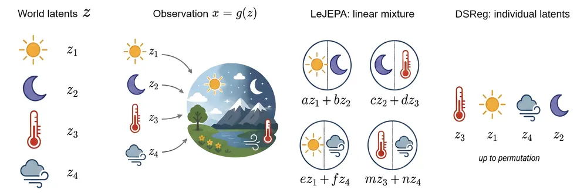
RoboJEPA: Scaling Robotic Latent World Models
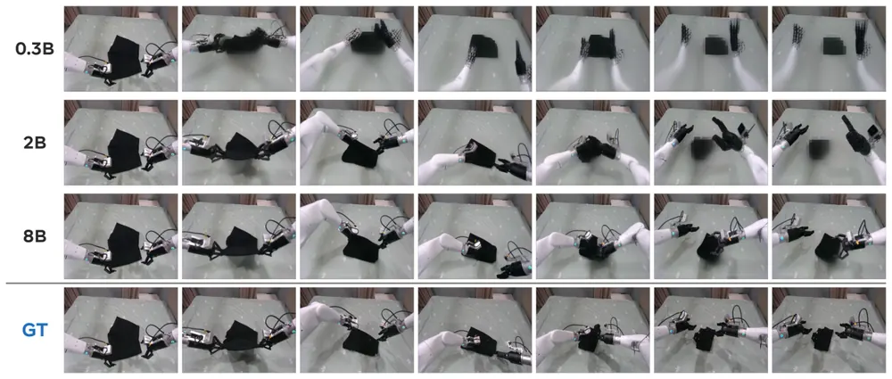
An Informational Curse of Horizon in Goal-Conditioned Policy Learning
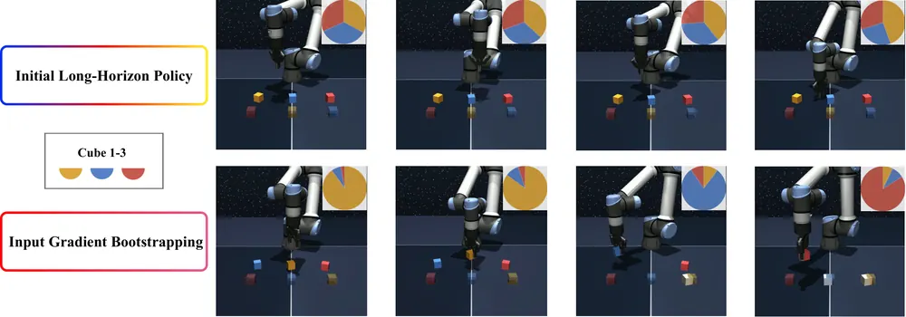
Q-Learning with Scalar Adjoint Matching
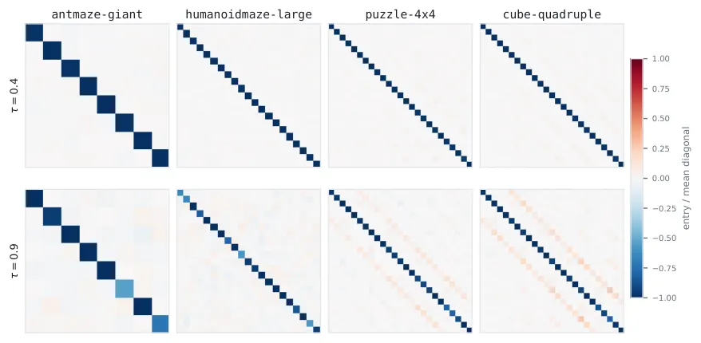
Juno: Taming Predictive Latents for Vision-Language-Action Models
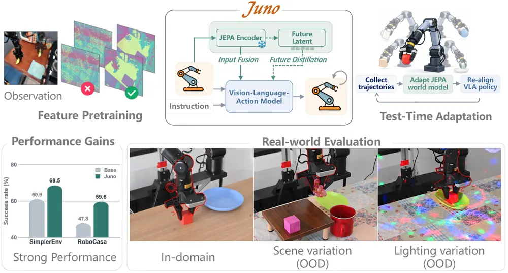
Video Prediction Policy 2: Predict Better, Act Better
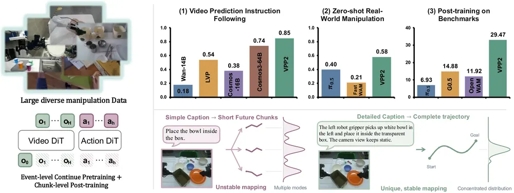
SPW-Nav: A Streaming Panoramic World Model for Language-Guided Navigation
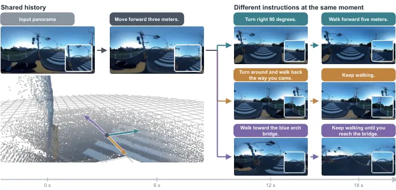
World Models Dream of Success: Diagnosing and Repairing Failure Insensitivity in Robot World Models
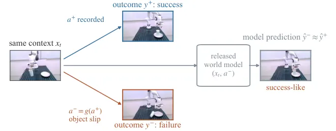
Beyond Policy Support: Interaction Constrained Offline Reinforcement Learning for Autonomous Driving
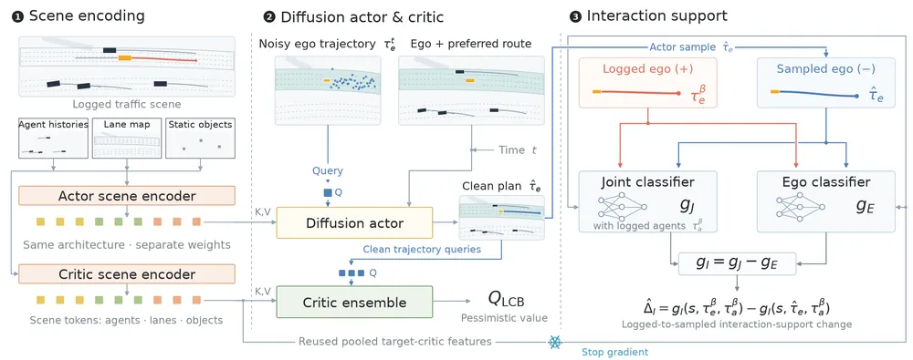
PAIR: Bridging Perception and Action in Vision-Language-Action Models
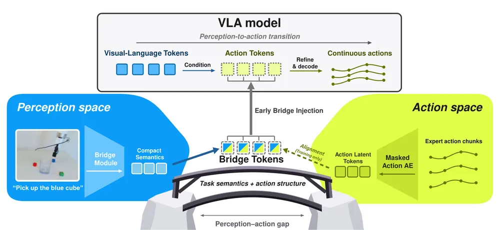
EmbodiedRSI: Active Continual Robot Learning Through Hypothesis-Guided Co-Evolution
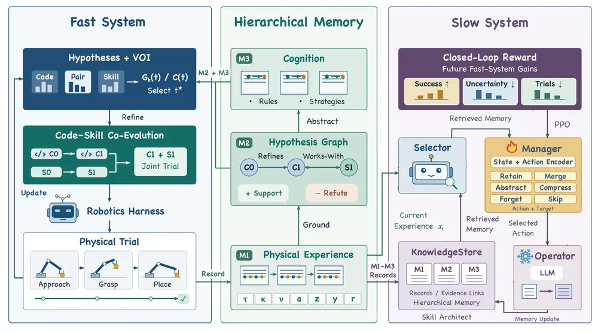
TERRA: Learning Transportable Latent Actions through Temporal Effect Representation and Relational Alignment
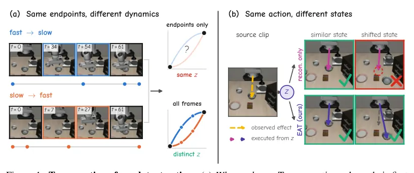
TouchScale: 500 Hours of Human Vision and Touch for Visual-Tactile Learning
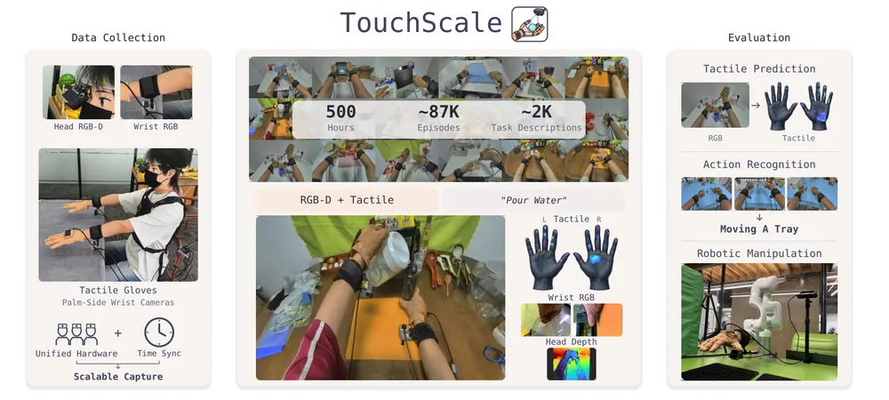
Event-Aligned Visual Action Reasoning for World Action Models
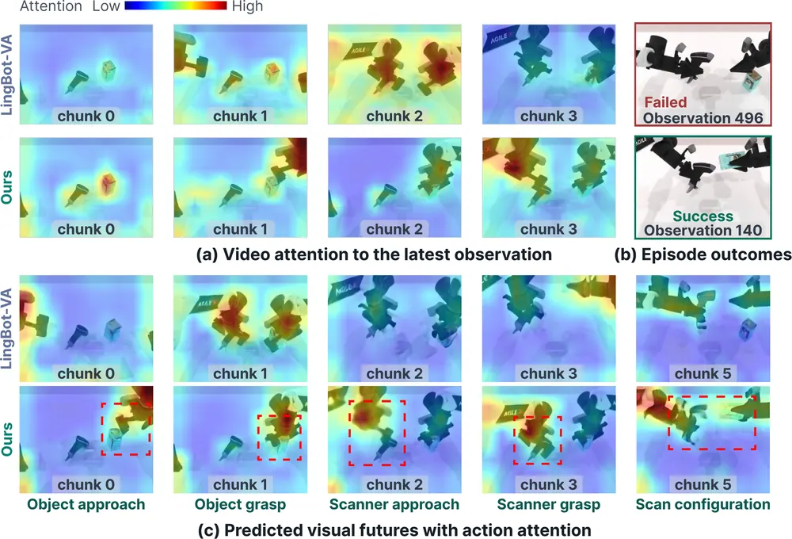
Sparse Planning in Visual World Models via Cost Gradients
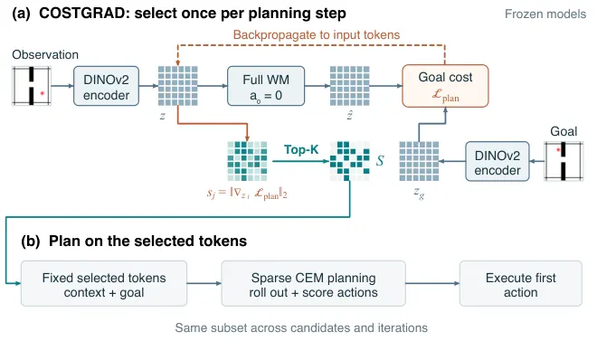
오늘의 핵심 연구 트렌드 종합
- World-action model(WAM)이 조작 정책의 주류 설계로 정착함 — VPP2, Juno, Event-Aligned Visual Action Reasoning, World Models Dream of Success 네 편 모두 비디오 기반 world model에 action expert를 붙이는 구조를 씀. 각각 이벤트 단위 학습, test-time adaptation, chunk 경계, failure 데이터 중 한 지점에 집중함. 개별 architecture보다 데이터·커리큘럼·학습 레시피 경쟁으로 넘어가는 모습임.
- World model을 "왜 되는지" 정량화하는 empirical science가 등장함 — RoboJEPA가 로봇 world model 최초로 compute scaling law를 실측하고, DSReg가 reconstruction 없이 개별 world latent를 복원하는 식별성 조건을 증명함. 둘 다 새 architecture가 아니라 기존 틀의 한계를 이론·실측으로 짚은 쪽임.
- VLA의 perception-action 전환을 명시적 중간 표현으로 메우려는 시도가 이어짐 — PAIR가 bridge token(action latent autoencoder로 학습)으로, TERRA가 temporal effect 표현으로 final action loss 하나에만 의존하던 암묵적 학습을 보완함. 둘 다 기존 backbone에 꽂는 plug-in 수준이라 novelty는 제한적이나 효과는 일관됨.
- Failure를 버리지 않고 학습 신호로 재활용하는 방향이 강화됨 — World Models Dream of Success의 CureWM은 failure insensitivity를 진단해 released checkpoint를 counterfactual replay로 고치고, Juno의 test-time training(TTT)은 실패 rollout을 policy target에서는 빼되 dynamics 학습에는 남김. "성공만 학습한다"는 전제를 깨는 쪽으로 수렴함.
- Inference-time 비용을 줄이는 근사가 planning·RL fine-tuning 양쪽에서 나옴 — COSTGRAD는 token 50%만으로 CEM planning 성능을 유지하고 iteration까지 줄이면 5.2배 빠르게 만들고, SQAM은 adjoint matching의 vector-Jacobian product를 scalar 근사로 제거함. 둘 다 재학습 없이 기존 predictor/policy에 바로 적용 가능하다는 공통점이 있음.
- Goal/relabeling 기반 학습의 정보이론적 한계를 진단하는 연구가 나옴 — Informational Curse of Horizon이 hindsight relabeling horizon이 길어질수록 action-goal 상호정보량이 줄어든다는 것을 증명함. VLA의 language/goal conditioning 약화 문제에도 같은 진단 틀을 적용할 수 있음.
유망 연구 방향 및 프로젝트 제안
World model compute scaling과 failure recovery 성공률의 관계 측정 - research question: world model 기반 counterfactual replay repair(CureWM 방식)의 복구 성공률이 predictor 크기·학습 compute에 따라 scaling law를 따르는가, 아니면 특정 규모 이상에서 수렴하는가. - 접근·novelty: RoboJEPA의 scaling law 측정 틀(여러 크기 predictor 학습 + held-out extrapolation)과 World Models Dream of Success의 failure insensitivity 진단·repair를 결합해, "복구도 scale이 되는가"를 처음으로 측정함. - 왜 지금·경쟁 prior works: 오늘 두 논문이 각각 scaling과 failure repair를 다뤘지만 결합한 연구는 없음. FACT(동시 연구)는 architecture를 새로 설계하는 쪽이라 scaling 질문과 독립적임. - risk·target venue: scaling 실험 자체가 compute-heavy하고, 복구가 scale 안 한다는 negative 결과가 나올 위험이 있음. 다만 negative 결과도 "world model repair는 구조 문제"라는 주장을 뒷받침하는 기여가 됨. target: CoRL/RSS.
실패 원인 진단을 위한 world latent 식별성 활용 - research question: DSReg처럼 reconstruction 없이 분리한 individual world latent를 실제 조작 실패의 원인 factor 짚기(어느 object·속성이 실패를 유발했는지)에 쓸 수 있는가. - 접근·novelty: DSReg의 post-hoc rotation을 실로봇 manipulation world model(예: RoboJEPA, CureWM의 backbone)에 붙여, 실패 직전 latent의 어느 component가 비정상인지 probe로 짚어내는 diagnostic 모듈을 설계함. - 왜 지금·경쟁 prior works: DSReg는 시뮬레이션(3DShapes, dSprites)에만 검증했고 실로봇 failure diagnosis 적용은 다루지 않음. counterfactual reasoning·causal confusion 문헌과 직접 연결되는 빈 틈임. - risk·target venue: DSReg의 식별성 보장이 Gaussian latent·stationary transition 같은 강한 전제에 의존해, 실제 로봇 데이터에서 전제가 깨지면 성능이 일정 수준에서 더 못 오를 위험이 있음(논문도 quarter-orientation dSprites에서 이를 보임). target: CoRL/NeurIPS.
VLA 중간 표현 붕괴를 test-time failure 신호로 쓰기 - research question: PAIR의 bridge token이나 TERRA의 temporal effect latent가 정상 범위를 벗어나는 지점을 policy 실패의 선행 신호로 쓸 수 있는가. - 접근·novelty: PAIR는 bridge token이 action expert 진입 전부터 action 정보를 담는다는 분석(R2 0.878)만 보였을 뿐 이를 모니터링에 쓰지 않음. 이 표현의 실시간 이상 탐지 가능성을 검증하는 것이 새로운 지점임. - 왜 지금·경쟁 prior works: PAIR·TERRA 모두 2026년 10월 공개된 최신 논문이라 후속 활용 연구가 아직 없음. 기존 failure detection은 대부분 action/value 레벨에서만 봄. - risk·target venue: bridge token이 final action loss로만 학습돼 failure와 상관이 약할 가능성이 있음(두 저자 모두 이 분석을 직접 하지 않음). 사전 pilot 실험으로 상관 여부를 먼저 확인해야 함. target: CoRL.
Event-Aligned Visual Action Reasoning의 self-supervised 확장 - research question: Event-Aligned Visual Action Reasoning이 시뮬레이터 contact detector에 의존하는 event/evidence 경계를 raw video에서 self-supervised로 찾을 수 있는가 — 가능하면 실로봇 데이터에 바로 적용 가능해짐. - 접근·novelty: Event-Aligned Visual Action Reasoning이 직접 명시한 한계(event 경계가 학습 중에만 쓰이고 시뮬레이터 state·LLM annotation에 의존)를 그대로 research gap으로 가져감. motion/contact cue 기반 unsupervised event segmentation을 붙이는 것이 핵심 novelty. - 왜 지금·경쟁 prior works: 관련연구로 인용된 Wall-WM(Event-Aligned 논문이 인용한 선행연구)도 event 기반 구조화를 다루나 직접 수치 비교가 본문에서 확인 안 됨 — 두 접근의 차이를 명확히 하는 것 자체도 기여가 됨. - risk·target venue: self-supervised segmentation 품질이 낮으면 evidence phase 보존 효과가 사라져 성능 개선이 안 나올 위험이 큼. 학생 연구 주제로 적합. target: CoRL/ICRA.
오늘 반드시 읽어야 할 논문
- DSReg: Provably Recovering Individual World Latents without Reconstruction — reconstruction 없이 world latent를 component 단위로 복원하는 첫 식별성 결과임. 오늘 스크리닝 최고점(83).
- RoboJEPA: Scaling Robotic Latent World Models — 로봇 world model 최초의 compute scaling law 실측 결과임. venue 적합성도 오늘 최고(82).
- An Informational Curse of Horizon in Goal-Conditioned Policy Learning — hindsight relabeling horizon과 action-goal 상호정보량 감소를 이론으로 연결한 진단 연구.
- Q-Learning with Scalar Adjoint Matching — adjoint matching의 VJP 비용을 scalar 근사로 제거, 실제 양팔 로봇 VLA fine-tuning까지 검증.
- Juno: Taming Predictive Latents for Vision-Language-Action Models — 하나의 JEPA로 pretraining·policy·test-time adaptation을 엮고, 실패 rollout을 dynamics 학습에만 재활용하는 비대칭 TTT 설계.
- Video Prediction Policy 2: Predict Better, Act Better — 이벤트 단위 비디오 예측으로 instruction-trajectory 매핑을 안정화함. real-world ALOHA zero-shot에서 baseline보다 18.5%p 높은 성공률을 보임.
- SPW-Nav: A Streaming Panoramic World Model for Language-Guided Navigation — 회전을 구면 리샘플링으로 분리해 생성 부담을 줄인 첫 interactive panoramic world model.
- World Models Dream of Success: Diagnosing and Repairing Failure Insensitivity in Robot World Models — 공개된 robot world model이 성공·실패 action을 구분 못 하는 현상을 진단하고 실로봇에서 검증까지 한 repair 레시피.
전체 1차 스크리닝 결과 (625편, 점수순) 펼치기
| # | 제목 | 점수 | 🤖 | 분야 | 한 줄 근거 |
|---|---|---|---|---|---|
| 1 | Video Prediction Policy 2: Predict Better, Act Better | 70 | 10 | VLA | video foundation model을 조작에 특화된 single-step visual planner로 distill하고 MoT로 inverse dynamics를 학습하는 world-action model(VPP2), real-world ALOHA·LIBERO-Pro/OOD에서 강한 zero-shot 성능으로 VLA·world model 우선주제에 정확히 부합하는 최상위 기여 |
| 2 | An Informational Curse of Horizon in Goal-Conditioned Policy Learning | 70 | 8 | RL | goal relabeling horizon이 길어질수록 action-goal 상호정보량이 줄어 BC 정책이 퇴화하는 informational curse of horizon을 규명하고 combinatorial manipulation task에서 short-horizon policy의 Jacobian을 distillation해 성능을 개선한 연구로 goal-conditioned manipulation·RL/IL에 직접적 기여가 있음 |
| 3 | World Models Dream of Success: Diagnosing and Repairing Failure Insensitivity in Robot World Models | 68 | 10 | World Model | released robot world model이 action 변화에 둔감하고 실패를 성공처럼 예측하는 문제를 진단하고, counterfactual failure로 fine-tuning해 optimism을 80%에서 30~43%로 낮춤, LIBERO와 실제 로봇팔 양쪽에서 검증된 world model·failure detection 결합 우선주제 논문 |
| 4 | DSReg: Provably Recovering Individual World Latents without Reconstruction | 68 | 7 | World Model | LeJEPA의 linear identifiability 위에서 reconstruction 없이도 structural diversity 조건만으로 개별 world latent를 signed permutation까지 복원 가능함을 증명한 첫 fully identifiable JEPA로 object-centric world model 표현학습에 실질적 기여가 큼 |
| 5 | Event-Aligned Visual Action Reasoning for World Action Models | 65 | 9 | World Model | world-action model의 시각적 예측을 interaction event에 맞춰 정렬하고 실행 유효성 헤드 도입, world model·VLA 핵심주제에 정확히 부합하며 DOMINO·RoboTwin에서 성능 향상과 레벨 간 transfer까지 입증 |
| 6 | Juno: Taming Predictive Latents for Vision-Language-Action Models | 65 | 9 | VLA | action-conditioned JEPA 하나로 pretraining·policy 학습·배포 적응을 통합한 Juno, SimplerEnv에서 최강 baseline 대비 성공률 향상 및 test-time adaptation으로 72.7%까지 도달, 배경·높이·물체가 바뀌어도 real robot에서 baseline이 0%로 붕괴하는 조건에서 70% 이상 유지 |
| 7 | PAIR: Bridging Perception and Action in Vision-Language-Action Models | 65 | 9 | VLA | perception과 action 사이 공유 latent representation을 학습해 continuous-action VLA를 개선, LIBERO·CALVIN·실로봇 7개 태스크에서 OpenVLA-OFT 성공률을 51.4%에서 65.0%로 끌어올림. |
| 8 | RoboJEPA: Scaling Robotic Latent World Models | 65 | 9 | World Model | JEPA 기반 로봇 latent world model의 scaling law를 실측하고 12개 embodiment·실로봇 zero-shot 배포까지 입증한 world model·manipulation 핵심 연구임. |
| 9 | TouchScale: 500 Hours of Human Vision and Touch for Visual-Tactile Learning | 62 | 9 | Manipulation | 500시간 규모 시각-촉각 데이터셋으로 로봇 조작 성공률을 22.5%에서 57.5%로 끌어올림, tactile perception·manipulation 우선주제에 직접 부합하는 대규모 실측 데이터 기여 |
| 10 | TERRA: Learning Transportable Latent Actions through Temporal Effect Representation and Relational Alignment | 62 | 8 | VLA | 시각 전환을 temporal effect로 압축하고 다른 상태로 transport해도 의미가 유지되는 latent action 학습, VLA pretraining(UniVLA·LAPA 대비) 및 LIBERO에서 검증된 새로운 representation·transport 기법으로 우선주제에 강하게 부합 |
| 11 | Sparse Planning in Visual World Models via Cost Gradients | 62 | 8 | World Model | token 기반 world model에서 planning cost의 gradient로 공간 토큰 중요도를 매겨 goal-conditioned 연속제어 planning을 50% sparsity에서도 성능 유지하며 2.6배 가속한 COSTGRAD로 world model 기반 test-time planning에 새로운 효율화 원리를 제시하고 architecture별 실패 모드까지 분석함 |
| 12 | SPW-Nav: A Streaming Panoramic World Model for Language-Guided Navigation | 62 | 7 | World Model | 언어 지시 기반 스트리밍 파노라마 world model로 네비게이션 지원, world model·VLN 우선주제에 부합하고 구면 회전 분리 등 formulation 신규성 있음 |
| 13 | Beyond Policy Support: Interaction Constrained Offline Reinforcement Learning for Autonomous Driving | 62 | 7 | RL | offline RL에서 ego 궤적이 주변 agent와의 joint 분포에서 벗어나는 interaction distribution shift를 정의하고 contrastive density-ratio로 보정하는 ICDP를 제안해 nuPlan·실제 트럭 주행에서 상호작용 critical 시나리오 성능을 개선한 연구로 자율주행 offline RL에 새로운 problem formulation을 제시함 |
| 14 | Q-Learning with Scalar Adjoint Matching | 62 | 7 | RL | flow policy의 value gradient 전파를 scalar adjoint로 근사해 비용을 줄이고 real bimanual robot VLA fine-tuning까지 검증, OGBench 최고 난이도 도메인에서 큰 성능 향상을 보여 test-time optimization·RL 우선주제와 직결됨 |
| 15 | EmbodiedRSI: Active Continual Robot Learning Through Hypothesis-Guided Co-Evolution | 60 | 9 | Manipulation | 가설기반 fast-slow 아키텍처로 실로봇 조작 성능을 자가진화시켜 RoboCasa365·LIBERO-Pro·실로봇에서 큰 향상(실로봇 71.3% 성공률)을 보여 failure-driven learning·test-time optimization·manipulation 우선주제에 정확히 부합함. |
| 16 | STRIKE: Learning Visual State Transitions for Physical World Modeling | 60 | 8 | World Model | dense video 생성과 분리해 visual state transition을 먼저 학습하고 재귀적으로 적용하는 world model, manipulation-video(RoboTwin2.0) 포함 물리 일관성 입증으로 world model 우선주제에 강하게 부합 |
| 17 | PhysEvo: Astra Can Act, Let It | 58 | 9 | Manipulation | 고정된 frozen model 주변에서 meta-agent가 스킬·도구를 자가진단·수정하는 physical recursive self-improvement, RoboDojo 42 task와 real AgileX PiPER 5 task에서 baseline 대비 큰 성공률 향상으로 test-time optimization 우선주제에 부합 |
| 18 | Long-WAM: Scaling the Context of World-Action Models | 58 | 9 | World Model | autoregressive video 사전학습이 world-action model의 긴 context 활용을 결정짓는다는 핵심 발견과 함께 streaming·비동기 실행으로 RTX5090 등 하드웨어에 배포, 동적 cup stacking에서 pi0.5와 FastWAM이 0/20인 과제를 95% 성공 |
| 19 | ActiveLang: Active Open-Vocabulary 3D Mapping with Semantic-Uncertainty-Guided Exploration | 58 | 8 | Embodied AI | dual-Gaussian 표현에서 semantic uncertainty로 탐사 경로를 정하는 active open-vocab 3D 매핑, active perception·scene mapping 우선주제에 직접 부합하고 로봇 시스템으로 평가 |
| 20 | Never Look Back: Understanding Persistence in 3D Object Memory from Egocentric Videos | 58 | 8 | Embodied AI | 에고센트릭 비디오에서 물체 위치·이력·맥락을 함께 유지하는 persistent 3D object memory(Ledger), robot memory 우선주제에 직접 부합하며 여러 벤치마크에서 큰 정확도 향상 |
| 21 | SAFE: Unified Slip and Fracture Detection with Low-Cost Acoustic Sensing in Robotic Grasping | 58 | 8 | Manipulation | PVDF 음향센서 두 개와 motor proprioception만으로 slip·fracture를 통합 분류하는 저가 센싱, 46회 실제 로봇 그라스핑 trial에서 91.3% 성공률로 failure-aware grasp 우선주제에 부합 |
| 22 | S2Tok: Streaming 3D Gaussian Reconstruction with Persistent Spatial Tokens | 58 | 6 | 3D Vision | 스트리밍 3D Gaussian 재구성에 persistent spatial token과 admission module 도입, object-centric 3D/4D representation 우선주제에 부합하는 새 online reconstruction formulation |
| 23 | Multi-Agent Coordination via Support-Preserving Distillation | 56 | 6 | Manipulation | offline multi-agent RL에서 flow 기반 teacher가 노이즈-모드를 잘못 매칭해 생기는 모드 붕괴를 optimal transport로 사전 교정하는 MoSDOT을 제안해 multi-robot coordination 벤치마크에서 라우팅 일관성을 개선한 연구로 생성적 정책 distillation에 새로운 관찰과 해법을 제시함 |
| 24 | DIVA: Dual-Space Intent-Aware Visual Attenuation for Vision-Language-Action Policies | 55 | 9 | VLA | task intent 기반으로 visual token을 anchor-then-attenuate하는 VLA 모듈로 LIBERO 성공률 향상과 실환경 perturbation 강건성을 보임. |
| 25 | RLHND: Video Foundation Models as Physically Grounded Hand Trackers for Robot Learning | 55 | 8 | Manipulation | 비디오 foundation model을 손 추적기로 전용해 pose와 접촉·힘을 동시 예측, human video로 robot manipulation 학습에 직접 활용(실로봇 실험 포함)되는 강한 fit |
| 26 | FlashNeRD: Performance-First Contact-Rich Neural Robot Dynamics | 55 | 8 | World Model | collision detection은 analytical로 유지하고 contact-rich dynamics만 학습해 NeRD 대비 55배 가속, DIAL-MPC 결합으로 locomotion·manipulation policy 학습 속도까지 향상시킨 world model 기여 |
| 27 | Beyond Reconstruction: What Matters in Action Tokenization for Robot Policies? | 55 | 8 | VLA | action tokenizer가 reconstruction만으로는 충분치 않고 downstream predictability·robustness가 중요함을 보이고 이를 반영한 ProAct 제안, LIBERO·RoboTwin과 real-world VLA에서 각각 11.3%p·36.7%p 향상 |
| 28 | Co-Evolving Robot Orchestrators and Policies through Deployment | 55 | 8 | VLA | VLM orchestrator와 VLA policy가 배포 중 서로의 실패 데이터로 co-evolve하는 Robo-COP 제안, 시뮬레이션 10 task와 real-world 3 task 모두에서 frozen policy 대비 큰 성공률 향상으로 test-time optimization 우선주제에 부합 |
| 29 | Sparse Feature Policy Unlearning Mitigates State Hallucination in Vision-Language-Action Models | 55 | 8 | VLA | VLA가 미실현 state를 실현된 것처럼 행동하는 state hallucination을 sparse autoencoder로 해석하고 관련 feature만 선택적으로 unlearn하는 SOUL, sim·real 모두에서 실패 감소와 기존 능력 유지를 동시에 달성 |
| 30 | ΔWAM: Distilling Action Tangent Fields into World Action Models | 55 | 8 | World Model | world action model의 supervision을 action이 미래를 바꾸는 방향에 집중시키는 local Taylor expansion 기반 Action Tangent Field 제안, 대규모 embodied pretraining 없이도 LIBERO-Plus·RoboTwin 분포 변화에서 pretrained policy보다 강건함 |
| 31 | Many Ways to Succeed: Diversity-Driven RL Fine-Tuning for VLA Generalization | 55 | 8 | VLA | RL fine-tuning이 성공 경로의 다양성을 넓힌다는 분석에서 출발해 success-conditioned diversity를 명시적 보상으로 쓰는 DRIVE, real dual-arm AgileX에서 OOD 성공률을 64.1%에서 73.3%로 향상 |
| 32 | StableGrasp: Reconstructing Physically Stable Human Hand Grasps from Single Images | 55 | 7 | Manipulation | 단일 이미지에서 물리적으로 안정적인 human grasp을 differentiable simulation으로 복원, manipulation 우선주제에 직접 부합하고 사람 그랩 데이터를 로봇에 활용 가능한 formulation |
| 33 | Spatial Latent Reasoning for Embodied Reference Understanding | 55 | 7 | Embodied AI | 포인팅 제스처 기반 embodied reference understanding에 순서화된 spatial-visual latent state 도입, embodied spatial reasoning 우선주제에 직접 부합하고 여러 VLM 백본에서 큰 개선 확인 |
| 34 | LASER: Latent Space Adjoint Matching for Support-Constrained Entropy-Regularized Offline RL | 55 | 7 | RL | flow policy의 latent space에서 entropy 정규화된 adjoint matching으로 offline RL을 수행하는 LASER, OOD action 억제라는 offline RL 핵심 문제에 새 paradigm을 적용하고 OGBench 40개 과제에서 SOTA |
| 35 | Trajectory Planning without Trajectory Data: A Manifold-Guided Approach | 55 | 7 | Manipulation | trajectory 데이터 없이 state-space manifold만으로 planning하는 Ariadne 제안, dual-arm 고차원 planning까지 trajectory-supervised 방법과 경쟁력 있는 새로운 problem formulation (NeurIPS 2026) |
| 36 | Safe on Average, Unsafe in the Tail: When Is the Episodic-Cost Tail Controllable? | 55 | 5 | RL | 평균비용만으로는 가려지는 episodic-cost tail 위험을 CVaR로 정의해 navigation·locomotion task에서 tail-safe 여부를 평가한 연구로 safe RL에 실질적 문제의식을 던지나 새 알고리즘 제안보다 진단 중심임 |
| 37 | Convex-Concave Reinforcement Learning | 55 | 4 | RL | policy gradient를 log-density-ratio 좌표의 DC program으로 재구성해 NPG·TRPO·PPO·AWR을 통합하는 새로운 정책최적화 틀로 RL 이론에 실질적 기여가 있으나 로봇 실험은 없음 |
| 38 | Scalable Patch-Level Self-Supervised Learning | 55 | 3 | CV | multi-view 정보를 patch 단위로 정렬하는 정보이론적 SSL(JEM)을 7B까지 확장해 DINOv3를 능가, 로보틱스 특화는 아니지만 향후 VLA perception backbone에 쓰일 수 있는 견실한 표현학습 기여 |
| 39 | Consistent Distribution Matching for Data-Free Diffusion Distillation | 55 | 2 | Video | teacher-student 하나의 네트워크로 분포매칭을 학습하는 데이터 없는 diffusion distillation으로 1-step 생성에서 SOTA FID를 보여 world model 등 생성모델 가속에 참고될 수 있음 |
| 40 | RoboRender: Robot-Oriented Video Generation for Visual Sim-to-Real Transfer | 52 | 8 | Video | simulated depth·robot mask를 조건으로 photorealistic robot video를 생성해 sim-to-real visual gap을 메우는 RoboRender, pick-and-place 등 실제 과제에서 raw sim 대비 7.1배 성공률 향상 |
| 41 | Immiscible Diffusion Policy: Preserving Multimodal Robot Actions through Label-Free Noise Assignment | 52 | 8 | Manipulation | action-noise pairing이 diffusion policy의 multimodal collapse를 유발한다는 분석과 label-free noise assignment로 해결하는 Immiscible Diffusion Policy, 5개 sim과 2개 real humanoid task에서 modality 보존 크게 향상 |
| 42 | FoldBack: Self-Correcting Masked Generative Policy for Long-Horizon Garment Folding | 52 | 8 | Manipulation | grasp 실패를 pick-and-place 이벤트와 맞춰 감지·rollback·재시도하는 self-correcting masked generative policy FoldBack, 실제 옷 33개 대상 장기 수평 접기에서 baseline 대비 성공률 거의 두 배 |
| 43 | Kuration SDK: Addressing the Virtual2Real Gap via Data Curation | 52 | 6 | World Model | FVD·LPIPS 같은 지표가 action-conditioned world model의 실제 playability와 괴리되는 virtual2real gap을 밝히고 오픈소스 data curation SDK로 원인을 진단한 연구로 로봇 world model 평가에 직접 참고할 만함 |
| 44 | A Closed-Loop Non-Asymptotic Convergence Analysis of PPO with Learned Critics and Clipping | 52 | 4 | RL | PPO-Clip을 actor-critic 폐루프로 보고 critic 추정오차·clipping·배치재사용의 비접근적 결합 오차 한계를 증명한 이론 연구로 로봇학습에 널리 쓰이는 PPO의 튜닝 이해에 기여함 |
| 45 | Shared Geometry As A Rosetta Stone: Cross-Modal Alignment Without Paired Data | 52 | 2 | Multimodal | 페어 데이터 없이 Wasserstein Procrustes만으로 서로 다른 모달 임베딩을 정렬할 수 있음을 보여 Platonic Representation Hypothesis를 뒷받침한 연구로 representation learning에 일반적 가치가 있으나 로봇 적용은 없음 |
| 46 | Unrolled Flow Models for Reasoning | 52 | 2 | LG | flow model이 자신의 latent rollout을 통해 단계별로 추론을 쌓도록 학습시켜 그래프 도달성·Sudoku·Maze에서 integration step 증가가 실제로 성능을 높이게 만든 연구로 flow 기반 추론·test-time 계산에 새로운 학습 원리를 제시함 |
| 47 | HULK: Learning Whole-Body Forceful Loco-Manipulation for Humanoids | 50 | 8 | Manipulation | MPC로 guide한 teacher를 distill해 humanoid의 forceful whole-body loco-manipulation을 학습, capture-point barrier function으로 10kg 하중에서도 균형 유지해 real G1 검증 |
| 48 | Workhorse: Learning Robust Whole-Body Humanoid Loco-Manipulation from Human Data | 50 | 8 | Manipulation | 로봇 없이 수집한 human demonstration으로 visual planner와 whole-body tracker를 분리 학습, real G1에서 박스 분류·캐치·등반까지 수행하고 교란 복구도 시연 |
| 49 | CAP: Codebook-Aligned Prediction for Tokenized Robot Policies | 50 | 8 | VLA | action tokenizer의 codebook 구조를 policy의 class prototype으로 재사용하는 CAP 제안, 4개 quantizer·3개 sim benchmark·2개 real robot task에서 token classification head 대비 일관된 성공률 향상 |
| 50 | Predicted Futures Are Not Enough: Learning Executable Goals for Robot Manipulation | 50 | 8 | World Model | 3D trace world model의 예측에서 실행 가능한 terminal goal(SE(3))을 명시적으로 추출하는 Entity-Level Goal Readout, real Franka에서 분포 외 목표에도 closed-loop 성공률 유지 |
| 51 | RealtimeWAM: How Fast Can I Run My World Action Model? | 50 | 8 | World Model | observation 처리와 예측을 중첩 실행하고 안정적 영역의 feature·residual을 재사용해 world action model 추론을 가속하는 RealtimeWAM, RTX 4090에서 최대 10.67배 속도 향상과 real-world 성공률 개선을 동시 달성 |
| 52 | RoboQuest: Generalist Physical Agents that Search, Inspect and Test | 50 | 8 | Embodied AI | task 수행 전 상호작용으로 필요한 정보를 능동 탐색해야 하는 RoboQuest 벤치마크, 최고 agent도 23% 성공에 그치고 조기 탐색 중단이 주요 실패 원인임을 규명해 active perception 공백을 드러냄 |
| 53 | RFPO: Rectified Flow Policy Optimization for Embodied Control | 50 | 8 | RL | few-step flow policy 실행 시 발생하는 discretization gap을 reward-aware reflow로 보정하는 RFPO, Go2·Spot·H1·G1 등 4개 플랫폼에서 64-step 대비 2.4% 이내 성능으로 one-step 실행과 real robot 안정성 확보 |
| 54 | Rephrase Before You Act: Characterizing and Mitigating Language Sensitivity in Vision-Language-Action Models | 50 | 8 | VLA | VLA가 instruction 표현 하나 바꾸는 것만으로 성공률이 수십%p 흔들린다는 문제를 정량화하고, 재학습 없이 LLM이 배운 rephrasing 규칙으로 완화, 12개 held-out task에서 16~27% 상대적 향상 |
| 55 | Directed Temporal Representations for Offline Visual Control | 50 | 7 | World Model | offline visual control을 위해 temporal reachability에 맞춘 directed quasimetric representation을 world model 위에 학습, world model 기반 goal-conditioned control이라는 우선주제에 부합하는 견실한 기여 |
| 56 | UltraWorld: Learning Interactive Ultrasound World Models from Untracked Clinical Videos with Acoustic Sampling Map | 50 | 6 | World Model | 임상 초음파 비디오로부터 action-observation을 self-distill해 probe 동작을 따르는 interactive world model, world model 우선주제에 부합하고 closed-loop 로봇 스캐닝 평가까지 수행 |
| 57 | Continual Graph Multi-Agent Reinforcement Learning | 50 | 5 | RL | 그래프로 표현된 과제 구조를 frozen encoder로 보존해 continual multi-agent RL의 망각을 줄이는 FROG와 새 benchmark GRAFO를 제시한 연구로 formation control 등 multi-robot 과제에 직접 적용 가능함 |
| 58 | A Drosophila Whole-Connectome Network Can Learn Human-Designed Cognitive Tasks | 50 | 2 | LG | 초파리 전체 connectome의 고정 배선을 그대로 artificial network의 재귀 구조로 써서 산술·관계언어 과제를 학습시켜 rewiring 대조군보다 우수함을 보인 생물학적 wiring의 재사용 가능성을 입증한 흥미로운 연구나 로봇 적용은 없음 |
| 59 | CIRRA: Dual-Level Continual Instruction Reconciliation with Ongoing Execution for Embodied Robot Agents in Interactive Household Tasks | 48 | 8 | Embodied AI | 진행 중인 household task에 새 instruction을 구조보존적으로 통합하는 continual instruction reconciliation 프레임워크, Unitree G1 실제 실험에서 baseline 대비 30%p 향상 |
| 60 | RobotWorld: Benchmarking Multimodal Agents for Robot Use Across Diverse Tasks and Embodiments | 48 | 8 | Embodied AI | manipulation부터 driving까지 84개 과제·다양한 embodiment로 물리세계 agent 능력을 측정하는 RobotWorld, perception·control 서브스킬은 구성되나 상태 추적·복구 실패로 조합이 깨진다는 실패 분석 제공 |
| 61 | LLA-MPPI: Rapidly Adaptive Whole-body Control of Legged Robots with GPU-Accelerated Parallel Simulations | 48 | 8 | RL | GPU 병렬 contact 시뮬레이터 bank 중 최근 모션을 가장 잘 설명하는 것을 선택해 whole-body MPPI를 적용하는 LLA-MPPI, offline training 없이 real Go2에서 하중 추가·다리 고장·물체 push 중에도 적응 |
| 62 | SearchWorld: Spatial Value-Grounded Imagination for UAV Object Search via World Models | 48 | 8 | World Model | UAV 객체탐색에 공간적 value를 결합한 world model 기반 imagination 플래닝으로 world model·navigation 우선주제에 직접 부합하며 성공률 23.8%로 SOTA를 달성함. |
| 63 | Argos: Adapt Rich Geometric Priors for Generalizable Online Scene-Change-Detection | 48 | 7 | Embodied AI | geometric foundation model의 implicit 3D 지식을 적응시켜 scene change detection과 3D 재구성을 동시에 수행하는 Argos-SLAM, scene mapping·active perception 우선주제에 부합하는 실시간 로봇 시스템 |
| 64 | COOL: Curiosity-Driven Object Ownership Learning for Personalized Robotic Assistance | 48 | 7 | Embodied AI | 장기 행동 관찰로부터 물건 소유권을 추론하고 curiosity 기반으로 메모리를 갱신하는 COOL, CoRL 2026 accepted로 personalized robot assistance라는 새 problem formulation 제시 |
| 65 | RobotAPO: Adversarial Physics Preference Optimization for Robotic Manipulation Video Generation | 48 | 7 | Video | 물리 법칙 위반을 adversarial preference로 벌하는 RobotAPO로 manipulation video 생성의 물리 일관성을 높이고, real robot replay에서 task 성공률 37.4% 상대적 향상 |
| 66 | Contact-Aware Imitation Learning Through Contact Factorization | 48 | 7 | Manipulation | 접촉력을 task 의도와 환경 의존적 contact factor로 분리하는 FACE, 표면·형상이 바뀌어도 policy 재학습 없이 real robot에서 일반화 성능 검증 |
| 67 | Point It, Strike It: Direction-Conditioned Dynamic Manipulation of Deformable Linear Objects | 48 | 7 | Manipulation | rope tip의 도착 방향까지 지정하는 direction-conditioned dynamic manipulation 문제를 제기하고, 2만배 가속한 DLO 시뮬레이터와 warm-start 기반 TRACE/RECAP로 real robot에서 방향 포함 목표 성공률을 50%에서 79%로 향상 |
| 68 | Do Vision-Language-Action Models Understand Instructions? A Mechanistic Interpretability Study on Language Grounding | 48 | 7 | VLA | activation/attribution patching으로 pi0.5와 GR00T N1.7의 language grounding을 분석, 두 모델이 directional language와 빈 instruction에만 민감하다는 상반된 내부 메커니즘을 규명 |
| 69 | Agentic RSR: Real-to-Sim-to-Real through Scene Reconstruction and Execution-Grounded Robot Policies | 48 | 7 | 3D Vision | workspace 비디오로 장면을 재구성하고 같은 agent가 policy까지 개발해 real robot에 연결하는 Agentic RSR, 18개 재구성 장면에서 real 성공률이 sim 성공률의 80%를 유지 |
| 70 | RoboPrompt: Intuitive Robot Policy Steering with Sparse Human Input | 48 | 7 | Manipulation | 그려진 궤적·점·방향 같은 sparse human input을 noise space에서 조정해 기존 policy 구조를 바꾸지 않고 steer하는 RoboPrompt, DAgger 반복 후 pi0.5 평균 성공률 15.5%p 향상과 개입 횟수 감소 |
| 71 | WAPR: A Foundation Model for Wide-Angle Refinement in Unseen Object Pose Estimation | 48 | 6 | Manipulation | 넓은 각도 오차까지 보정하는 unseen object pose refinement foundation model, manipulation을 위한 6D pose estimation 벤치마크(BOP)에서 SOTA |
| 72 | From Digital Human Interactions to Physics-Based Humanoid Skills: Physics-Grounded Post-Training of Interaction Generators | 48 | 6 | RL | 물리 시뮬레이션 롤아웃에서 얻은 preference로 humanoid interaction generator와 tracking policy를 공동 조정, humanoid 로봇 스킬의 물리적 타당성을 DPO로 정렬하는 RL/IL 관련 기여 |
| 73 | Explicit Geometric Chain-of-Thought for Vision-Language-Action in Autonomous Driving | 48 | 6 | VLA | 2D에서 먼저 그라운딩하고 3D foundation model의 localized geometry를 끌어와 궤적을 생성하는 geometric chain-of-thought VLA(GeoCoTDrive), 자율주행 planning에 VLA 우선주제를 직접 적용하고 안전성 지표 개선 |
| 74 | Controllable Crowd Generation through World-Model Planning | 48 | 5 | World Model | world model 기반 planning을 군중 시뮬레이션에 적용해 런타임 제어 가능하게 함, 로봇 네비게이션 응용 언급되나 핵심은 보행자 시뮬레이션 |
| 75 | It Is Not Seeing the Hazard: A Frozen Vision-Language Safety Score Measures Its Caption Bank | 48 | 5 | RL | frozen VLM 기반 안전 reward가 실제로는 위험을 보는 게 아니라 caption bank와의 유사도만 측정한다는 것을 통제 실험으로 폭로, VLM reward를 쓰는 안전·RL 연구에 중요한 경고 |
| 76 | DynStream: Online Streaming 4D Gaussian Reconstruction of Dynamic Worlds from Unposed Video | 48 | 4 | 3D Vision | unposed 비디오에서 온라인으로 4D Gaussian을 점진 융합하는 스트리밍 재구성, object-centric 4D representation 우선주제에 해당하는 견실한 3D vision 기여 |
| 77 | Spatial Induction Heads: In-Context Learning of Multidimensional Cellular Automata | 48 | 3 | World Model | 다차원 cellular automata에서 spatial routing을 수행하는 induction head 메커니즘을 규명한 이론 연구로 공간 표현 설계에 시사점이 있으나 직접적인 로봇 적용은 없음 |
| 78 | Patient, Place, Prior (P$^3$): What Counts as Personalization in Medical World Models? | 48 | 3 | World Model | 환자별 world model 개인화가 실제 근거가 있는지 감사하는 P3 틀과 Cancer JEPA로 world model claim 검증 방법론에 참고할 만함 |
| 79 | OrthoGen: A Generative Orthogonal Learner for Time-Varying Treatments | 48 | 2 | RL | 시간가변 처치에서 조건부 분포적 potential outcome을 생성모델로 재귀 추정하는 Neyman-orthogonal 학습기 OrthoGen으로 counterfactual reasoning 방법론에 기여하나 의료 도메인이며 robotics 적용은 없음 |
| 80 | Pretraining Shapes Spectral Structure: Architecture- and Strategy-Conditional Prediction of OOD Robustness in Foundation Models | 46 | 2 | Representation Learning | 사전학습 가중치의 스펙트럴 농도만으로 target 데이터 없이 OOD robustness 방향을 예측할 수 있음을 116개 모델·7개 모달리티로 보인 진단 도구로 foundation model 선택 일반에 유용하나 robotics 특화는 아님 |
| 81 | Edge Accuracy Is Not Enough: Why Dynamics-Learned Structure Fails to Transfer to Inverse Problems | 46 | 2 | LG | forward 시뮬레이션에서 학습한 관계 구조가 edge accuracy 조건을 만족해도 inverse problem 전이에는 체계적으로 실패함을 가스누출·음향 역위치추정에서 보인 비판적 연구로 구조 전이 가정에 경고를 주며 transferability 검정 도구도 제시함 |
| 82 | Shared Gaussianization: What Gaussian Regularizers Certify About Contrastive Learning, and What They Miss | 46 | 2 | Representation Learning | LeJEPA의 SIGReg가 InfoNCE 최적해에서만 정확히 소실하며 그 근방에서 nuisance 제거를 보장하는 조건을 증명한 이론 연구로 world model 학습에 쓰이는 분포매칭 정규화 설계에 참고할 만함 |
| 83 | MUNITE: Unified Multimodal Latent Inference for Any-to-Any Multimodal Generation | 46 | 1 | Multimodal | 인코딩과 생성을 관측 정도가 다른 동일 추론문제로 보는 conditional flow 기반 any-to-any 멀티모달 생성 MUNITE로 개념은 새롭지만 toy 규모 벤치마크에서만 검증됨 |
| 84 | Temporal Visuo-Tactile Learning for Dexterous Grasp Stability | 45 | 8 | Manipulation | 200개 물체·1만회 grasp으로 고해상도 동적 tactile이 grasp stability 예측에 미치는 영향을 체계적으로 분석, 학습한 stability gate를 real robot regrasping에 적용해 성공률 10.5%p 향상 |
| 85 | From Wearable Interfaces to Dexterous Policies: Contact Shifts and Tactile Representations | 45 | 7 | Manipulation | wearable exoskeleton interface의 기하 구조가 기록되는 tactile·contact 패턴과 policy 성능에 영향을 준다는 실증 분석, 데이터 수집 하드웨어 자체를 학습 파이프라인의 일부로 재정의 |
| 86 | MimicX: Policy-in-the-Loop Supervision Refinement for Video-Driven Humanoid Motion Tracking | 45 | 7 | Embodied AI | 비디오 기반 humanoid motion tracking에서 실행 실패를 분석해 supervision과 curriculum을 policy-in-the-loop로 개선, tracking error 25.7% 감소·execution horizon 255.6% 증가 |
| 87 | Co${}^{2}$Skill: Whole-Body Control via Skill Composition for Long-Horizon Human-Environment Interaction | 45 | 7 | Manipulation | scene interaction과 dexterous manipulation을 하나의 policy로 통합하는 whole-body control, task·phase별 observation mask와 cross-task curriculum으로 장기 과제 수행 |
| 88 | TempoBridge: Language-Guided Tempo Control for Vision-Language-Action Policies | 45 | 7 | VLA | frozen VLA representation에서 tempo 신호를 추출해 언어로 실행 속도를 조절하는 TempoBridge, 추가 demonstration·fine-tuning 없이 LIBERO tempo 성공률을 52.6%에서 89.7%로 향상 |
| 89 | Precise SE(3) End-Effector Tracking in Whole-Body Humanoid Control | 45 | 7 | Manipulation | geometric admittance control과 residual RL을 결합해 humanoid whole-body 상황에서 end-effector pose를 정밀 추적하는 ResGAC, real G1 peg-in-hole에서 SONIC 대비 90% vs 50% 성공률 |
| 90 | RoboPace: Contact-Aware Time-Optimal Retiming for Action-Chunk Policies | 45 | 7 | Manipulation | human demonstration의 timing이 로봇에 그대로 전이되지 않는 문제를 contact 예측 기반 retiming으로 해결하는 RoboPace, policy 재학습 없이 real dual-arm에서 속도와 신뢰성을 동시에 확보 |
| 91 | YUBI-STAG: Contact and Semantic-Rich Alignment for VLAs via Automated Video-Language Grounding | 45 | 7 | VLA | contact-object segmentation과 VLM으로 demonstration에 세밀한 상호작용 의미를 자동 주석하는 YUBI-STAG와 경량화한 YUBI-VLM, bimanual VLA의 instruction following 성능 향상 |
| 92 | AirGroundVLN: A Large-Scale Benchmark for Goal-Oriented Air-Ground Collaborative Vision-and-Language Navigation | 45 | 7 | Navigation | 공중-지상 협업 VLN을 위한 대규모 벤치마크 AirGroundVLN과 시공간 공유 메모리·지역-국소 계획을 결합한 AG-CoNAV, 10,281 episode 규모의 체계적 평가 |
| 93 | MeshSIPP: Efficient Lattice Planning in Dynamic Environment | 45 | 7 | Navigation | 동적 환경에서 primitive를 묶어 처리하는 SIPP 기반 lattice planner로 완전성·최적성을 증명하고 ROS2 실시간 시뮬레이션에서 3배 가속을 보임. |
| 94 | GUARD: Geometric Uncertainty-Aware Point Cloud Denoising and Segmentation for Robotic Hard Disk Drive Disassembly | 45 | 6 | Manipulation | HDD 분해 로봇을 위한 point cloud 기하 불확실성 기반 필터링·세그멘테이션, 로봇 조작 전처리로 실용적이나 방법 자체는 기존 모듈 결합에 가까움 |
| 95 | KASALv2: Fully Automatic 3D Rotational Symmetry Classification and Axis Localization | 45 | 6 | Manipulation | 완전 자동 3D 회전 대칭 분류·축 추정, 이를 FoundationPose에 적용해 6D pose 정확도 개선, manipulation을 위한 pose estimation에 실질적 도움 |
| 96 | ECHO: Embodied Camera Observations of Human Object Carrying | 45 | 6 | Embodied AI | 사람이 물건을 어디로 옮기는지 관찰해 맥락적 목적지를 예측하는 ECHO 데이터셋·과제, embodied assistant의 공간 추론에 직접 연관되는 새로운 벤치마크 |
| 97 | Learning Unknown Constraints without Unsafe Data via Optimality and Counterfactual Regularization | 45 | 6 | RL | 학습된 dynamics와 KKT 최적성 조건을 결합해 위험한 탐색 없이 unknown constraint를 복원하는 CF-KKT, offline ICRL 대비 안전성·데이터 효율성 개선 |
| 98 | LighTROcc: Lightweight 4D Occupancy Forecasting via Instance-Centric 3D Gaussians | 45 | 5 | 3D Vision | instance-centric 3D Gaussian으로 경량 4D occupancy 예측, 자율주행 지각·예측 기여로 object-centric 표현 우선주제와 일부 연결 |
| 99 | Rubix: Global Correspondence-Free Point Set Alignment through Assignment Geometry | 45 | 5 | 3D Vision | Procrustes-Wasserstein 정합을 permutation polygon으로 전역 최적화하는 이론적 결과(Rubix), 포인트셋 정합이라는 로봇 SLAM·localization에 쓰일 수 있는 일반화된 이론·도구 기여 |
| 100 | Do Vision Models Learn Physical Constraints or Rendering Shortcuts? A Counterfactual Benchmark for Grounded Physical Consistency | 45 | 4 | World Model | 이미지 편집이 물리 법칙(그림자·반사 등)을 깨는지 진단하는 counterfactual 벤치마크, counterfactual reasoning 우선주제와 연결되고 VLM의 물리 이해 한계를 보여줌 |
| 101 | SkillCycle: Co-Evolving Agent Policies and Skill Banks | 45 | 4 | RL | skill bank와 policy를 번갈아 업데이트하는 co-evolution 프레임워크, WebShop/ALFWorld 텍스트 에이전트의 skill chaining에 해당하나 물리 로봇은 아님 |
| 102 | Loud Failures, Quiet Failures: Fault Detection and Recovery in Tool-Using Language Model Agents | 45 | 4 | LG | tool-using agent가 silent failure를 인식 못하는 현상을 fault injection으로 정량화한 연구로 failure detection·recovery 우선주제에 직접 부합하는 체계적 실증 연구임. |
| 103 | World Potential Model: Pretrained World Knowledge as Progress Potentials | 45 | 3 | World Model | pretrained world knowledge를 progress potential로 써서 별도 process reward 없이 장기 agent를 학습, world model·실패감지 우선주제와 연결되나 텍스트 환경(ALFWorld)에 국한됨. |
| 104 | Why VLMs Miss Small Objects, and When Zooming In Is Safe | 45 | 2 | Multimodal | VLM이 작은 물체를 놓치는 이유를 토큰 예산 이론으로 설명, recall-cost frontier 이론이 흥미롭고 일반화 가능하나 로보틱스 직접 연관은 약함 |
| 105 | The Dichotomy Between Pattern Recognition and Step-by-Step Reasoning | 45 | 1 | NLP | 토큰 의존 범위에 따라 패턴인식과 단계적 추론을 구분하는 De Bruijn 그래프 이론으로 추론 일반화에 통찰을 주나 robotics 적용은 없음 |
| 106 | COPC: Coupled Off-Policy Correction for Asynchronous LLM Reinforcement Learning | 44 | 2 | RL | 비동기 RL에서 advantage staleness와 policy staleness를 동시에 보정하는 COPC로 token-integrated reasoning에서 성능을 올렸으나 LLM post-training 특화 연구임 |
| 107 | YANchor-4B: Effective Long-Horizon Reasoning in O(N) Time with O(1) Memory | 44 | 2 | NLP | O(N) 시간·O(1) 메모리로 핵심 정보를 anchor로 보존하는 recurrent 메모리 기법 YANchor-4B로 긴 수학추론 성능을 높였으나 LLM 텍스트 추론 특화이며 robot memory에는 간접적으로만 참고됨 |
| 108 | MorphCL: Morphological Contrastive Learning for Inertial-based Human Activity Recognition | 44 | 2 | Representation Learning | 모션 프리미티브 기반 구조-인식 그룹핑으로 IMU 자기지도학습의 전역 구조를 포착한 MorphCL로 기존 foundation model보다 4600배 적은 데이터로 성능을 맞춘 결과가 인상적이나 웨어러블 HAR 도메인이며 robotics 직접 적용은 아님 |
| 109 | Multimodal LLMs Can Learn to Read Brain Signals: A Vision--Language Model for Unified Multi-Task EEG Decoding | 44 | 1 | Multimodal | EEG를 이미지로 인코딩해 범용 VLM에 넣어 multi-task 디코딩을 수행하는 아이디어로 멀티모달 전이에는 흥미롭지만 로봇 적용은 없음 |
| 110 | When Should an In-Context Learner Expand Its Hypothesis Space? | 44 | 1 | LG | 실패를 구조적 증거로, 증거를 확장가치로 바꾸는 과정을 규범적으로 분석하고 transformer·LLM이 이를 어떻게 못 하는지 보인 meta-learning 이론 연구로 일반성은 있으나 robotics 적용은 없음 |
| 111 | A Review Of Robotic World Models For Dynamic Environments Based On Factor And Scene Graphs | 42 | 9 | World Model | factor graph와 scene graph 기반 동적 환경 robot world model을 종합 정리한 survey, 새 방법론 제시는 아니지만 world model 우선주제를 포괄적으로 다룸 |
| 112 | Fast Planning for Multi-object Multi-target Throwing | 42 | 7 | Manipulation | 다지(multi-fingered) hand로 여러 물체를 한 번에 던지는 multi-object multi-target throwing 플래닝, 5ms 내 재계획으로 real robot에서 29% 시간 단축 |
| 113 | Adaptive Risk-Certified Event-Triggered Replanning for Dynamic Navigation | 42 | 7 | Navigation | conformal하게 calibrate한 barrier risk를 early-warning으로 써서 동적 navigation에서 replanning 시점을 결정하는 CERT-Replan, 비정상(non-stationary) 환경에서 충돌 83.3% 감소 |
| 114 | Lifelong small-object navigation in changing object layouts: a benchmark and method | 42 | 7 | Navigation | 작은 물체가 재배치되는 환경에서의 lifelong navigation을 정식화하고 viewpoint-anchored memory로 재검증하는 IVAM-Nav, 새 벤치마크(LiSoNav-Eval)와 함께 기존 방법 대비 우수한 성능 |
| 115 | Benchmarking Behavioral Steerability in Behavior Foundation Models | 42 | 7 | Embodied AI | humanoid behavior foundation model이 사용자 의도대로 steer 가능한지를 조건·제약·조합 3단계로 체계화한 RoboSteer 벤치마크, 9개 기존 BFM에 대한 대규모 실증 비교 |
| 116 | HuMBLE: Human Motion-Driven Behavior Learning for Embodied Locomotion | 42 | 7 | Embodied AI | human motion data로 학습한 natural locomotion prior를 multi-task RL로 넓혀 steerable하고 robust하게 만드는 HuMBLE, Atlas R1·D1·G1 세 휴머노이드에서 실환경 검증 |
| 117 | TMT: Runtime Backdoor Detection for Vision-Language-Action Policies on Unseen Tasks | 42 | 6 | VLA | VLA policy의 backdoor 활성화를 token manifold와 latent transition으로 runtime에 탐지하는 TMT, 보지 못한 task에서도 10개 baseline 대비 SOTA 탐지 성능 |
| 118 | Do Better Visual Representations Always Lead to Better End-to-End Autonomous Driving? | 42 | 6 | CV | VFM target 선택과 auxiliary perception supervision이 end-to-end 자율주행 성능에 어떻게 영향을 주는지 체계적으로 분석, NAVSIM v2에서 기존 방법 대비 1.9점 이상 향상 |
| 119 | Decoding Neural Population Dynamics through Robotic Analog | 42 | 6 | Embodied AI | 인공 근육·RL controller로 구현한 생체모사 로봇 analog로 motor cortex의 rotational neural dynamics와 움직임의 인과관계를 규명, primate 데이터로도 확인된 흥미로운 신경과학-로보틱스 연결 연구 |
| 120 | CARE: Certifying Acceleration for Vision-Language-Action Inference | 42 | 6 | VLA | VLA 가속이 유발하는 실패를 paired rollout으로 정의하고 통계적으로 보장된 가속기만 선택하는 CARE, OpenVLA-OFT에서 9~10.8배 속도 향상을 95% 신뢰도로 보장하며 성공률 손상을 통제 |
| 121 | OmniCam: Omni-Camera Trajectory Generation via Geometry-Grounded Pose Token Learning | 42 | 5 | 3D Vision | 파노라마와 언어로 카메라 트래젝토리를 생성하는 geometry-grounded 모델, 로봇 active perception 응용 실험 포함되나 핵심은 비디오/뷰 생성 |
| 122 | PARC-Loc: Text-to-Point-Cloud Localization with Partial Assignment and Relational Consistency | 42 | 5 | Navigation | 언어로 도시 규모 포인트클라우드에서 위치를 찾는 localization, navigation·embodied spatial reasoning과 연관되는 relational consistency 기반 개선 |
| 123 | VolCo: Volumetric Contact for High-Fidelity Human Grasp Generation | 42 | 5 | Manipulation | volumetric contact 표현으로 penetration을 줄인 고품질 human grasp 생성(VolCoDiff), grasp synthesis가 manipulation 우선주제와 연결되나 사람 손 모션 생성에 한정 |
| 124 | LeCuration: A Tiny World Model as a Data Curation Multi-Tool | 42 | 5 | World Model | CS:GO 게임플레이에 LeWM 기반 작은 world model을 적용해 이상탐지·클러스터링용 data curation 도구로 쓴 proof-of-concept이나 정량적 성능 지표가 아직 없어 근거가 약함 |
| 125 | RDGSplat: Render-Dedicated Geometry for Novel View Synthesis | 42 | 3 | 3D Vision | frozen 3D foundation model에서 렌더링 전용 geometry를 별도 디코딩해 novel view synthesis 개선, 3D vision 기여이나 로보틱스 직접 연관은 약함 |
| 126 | Noise, Denoise, Correct: MCMC Posterior Sampling with Diffusion Priors in Three Steps | 42 | 1 | Video | SDEdit 제안을 MCMC로 보정해 비선형·비미분 forward model에서도 exact posterior sampling을 얻는 diffusion waltz로 inverse problem 일반에 유용하나 robotics 적용은 없음 |
| 127 | Can AI Agents Make Open-Ended Scientific Discovery? Evidence from Station | 42 | 1 | LG | 오픈월드 멀티에이전트 환경에서 과거 ICLR 논문의 발견을 재현하는 open-ended 과학 발견 평가로 로봇과 무관하나 연구 자동화 임팩트가 큼. |
| 128 | LayerRoPE: Dynamic Depth-wise Magnitude & Angular Superposition | 42 | 0 | LG | depth에 따른 residual norm 증가를 RoPE 유사 위치부호화로 재해석한 LayerRoPE로 아키텍처 통찰은 있으나 robotics와 무관함 |
| 129 | Identifiability of a dissipative knowledge-dynamics model: exact recovery under designed excitation, degeneration on observational data | 42 | 0 | LG | 지식 습득-망각 동역학 모델의 식별가능성을 설계된 자극 하에서만 증명하고 관측 데이터에서는 퇴화함을 네 가지 통제실험으로 반박한 방법론적으로 엄격한 연구이나 robotics와 무관함 |
| 130 | Factorized Tactile Representation and Control for Sim-to-Real Manipulation | 40 | 7 | Manipulation | 접촉 응답을 geometry·force·시간 변화로 분해해 mask별로 재학습 없이 전환되는 Tactile Gated Policy, real adversarial peg insertion에서 비분해 표현 대비 35% 향상 |
| 131 | On-Demand Robotic Assembly via Differentiable Geometric Part Repair | 40 | 6 | Manipulation | 생성 AI로 설계를 만들고 graph attention network surrogate로 조립 가능성을 differentiable하게 복구하는 로봇 조립 파이프라인, 두 UR5e로 실제 조립까지 시연 |
| 132 | Borrowed Eyes: Markerless Nano-UAV Flight with an Active Quadruped Observer | 40 | 6 | Robotics | quadruped 로봇이 arm-mounted camera로 nano-UAV를 추적·localize하는 협업 시스템, perception-aware NMPC로 가시성을 유지하며 real test에서 평균 59mm 오차 달성 |
| 133 | RT-Safe: Benchmarking Agent Safety in Real-Time Embodied Environment | 40 | 6 | Embodied AI | 실시간 제약 하 embodied agent 안전성 벤치마크로 추론 지연이 충돌을 12배 늘린다는 결과가 embodied safety에 중요한 시사점을 줌. |
| 134 | trACT: temporal revelation Airborne Camera Trap | 40 | 5 | Embodied AI | 맹금류의 시각 안정화를 모사한 드론 기반 motion anomaly 탐지 카메라 트랩, 공중 로봇 active sensing 응용이나 방법 자체는 기존 모듈 결합 |
| 135 | Video-Conditioned Generative Joint 2D-3D Hand Motion Recovery | 40 | 4 | 3D Vision | occlusion에 강인하게 2D-3D hand motion을 동시 생성하는 비디오 조건 생성모델(JoHan), 손 추적이 human-video-to-robot 학습에 쓰일 수 있는 manipulation 인접 기여 |
| 136 | Flow-of-Thought: A Framework for Visual Reasoning | 40 | 3 | Multimodal | 시각적 스케치를 중간 추론 단계로 사용하는 Flow-of-Thought, 공간 추론 개선이 embodied spatial reasoning과 개념적으로 연결되나 평가는 퍼즐 과제에 한정 |
| 137 | Relational Abstractions for Spatial Reasoning with Diffusion Models | 40 | 3 | CV | object-centric relation abstraction을 diffusion에 주입해 논리적 퍼즐 제약을 만족시키는 생성, 새로운 representation이지만 평가가 퍼즐 도메인에 한정됨 |
| 138 | Logarithmic Regret via Passive Change Detection in Piecewise-Stationary Self-Tuning Regulation | 40 | 3 | RL | 플랜트 변화 시점이 불확실한 self-tuning regulation에서 로그 regret을 증명한 PIECE-CD로 적응제어 이론에 기여하나 실제 로봇 실험은 없음 |
| 139 | SPLATIFY: Reproduce, Discover, Innovate! From Papers and Ideas to Trainable 3DGS Code | 40 | 2 | 3D Vision | 3DGS 논문을 코드로 변환하는 멀티에이전트 시스템, paper-to-code 자동화라는 흥미로운 메타 연구지만 로보틱스와 직접 관련 없음 |
| 140 | Towards Financial World Modeling | 40 | 2 | World Model | 금융 시장용 world model 표현학습 벤치마크로 world model 평가 방법론은 참고할 만하나 로봇 도메인과는 거리가 있음 |
| 141 | Symmetry-Informed Causal Partial Identification | 40 | 2 | LG | 데이터 대칭성을 제약으로 활용해 partial identification 구간을 좁히는 causal inference 연구로 counterfactual reasoning 도구로서 일반적 가치가 있음 |
| 142 | Constraint Tree Exploration for Learning from Language Feedback | 40 | 2 | RL | 언어 피드백으로부터 제약을 탐색하는 TRACE 알고리즘으로 language feedback 기반 learning 우선주제와 직접 연결되고 이론적 보장도 제시함. |
| 143 | The Deceptive Bandit Problem: Exploratory Coupling and the Fragility of Multi-Agent Learning | 40 | 1 | RL | bandit 학습에서 상대 agent의 탐색 정보를 악용하는 deceptive Nash equilibrium 이론으로 multi-agent 보안 문제에 한정됨 |
| 144 | Twist Flow for Inverse Problems | 40 | 1 | Video | joint twist-flow로 다봉 posterior를 보존하는 inverse problem 생성모델로 영상 복원·탐사에 적용되나 로봇 지각과 직접 연결은 없음 |
| 145 | Sequential Pretraining Favors Large Models | 40 | 1 | LG | 순차적 pretraining에서 작은 모델이 초기 분포에 과적합되는 primacy bias를 정의하고 Exposure Therapy로 완화한 연구로 foundation model 학습 일반에 통찰이 있음 |
| 146 | Homogenization in Multi-Agent Systems | 40 | 1 | RL | multi-agent 시스템이 상호작용을 통해 행동이 동질화되는 위험을 코드생성·채용·peer review에서 정량화한 연구로 multi-robot 시스템에도 시사점이 있으나 직접 실험은 아님 |
| 147 | Targeted Modality Dropout for Real-Robot Manipulation Robust to Intermittent Vision Loss | 38 | 7 | Manipulation | attention으로 추정한 modality 의존도 중 가장 우세한 modality를 선택적으로 drop시켜 vision 손실에 강건하게 만든 TMD, real bimanual robot에서 vision loss 시 성공률 유지 |
| 148 | OpenViTac: Learning and Benchmarking Visuo-Tactile Policies in a Unified Sim-and-Real Framework | 38 | 7 | Manipulation | VLA·WAM·VTLA policy를 sim과 real 양쪽에서 평가할 수 있는 visuo-tactile 벤치마크 OpenViTac과 tactile augmentation 프레임워크 OpenVTLA, 인프라 기여 |
| 149 | Autonomous Droplet Navigation via Model-Based Reinforcement Learning: Zero-Shot Transfer and Emergent Dynamics | 38 | 6 | RL | 표면장력 제어가 어려운 액체 droplet을 model-based RL로 조작, 50~150 episode만으로 zero-shot 전이와 depinning 전략 발견이 흥미롭지만 soft-matter niche 도메인 |
| 150 | LACE-CRAFT: Robot Co-Design with Actor Inheritance and Blackboard Collaboration | 38 | 6 | RL | 로봇 형태(morphology)와 policy를 함께 설계하는 co-design에서 actor 파라미터를 상속해 학습을 재활용하는 LACE-CRAFT, 5개 locomotion benchmark에서 기존 방법 대비 성능 향상 |
| 151 | TopoCurve: Geometry-Aware Topology Reasoning via Bézier Curves in Autonomous Driving | 38 | 3 | CV | Bezier curve 기반 차선 topology reasoning, 자율주행 SOTA지만 기존 topology reasoning의 표현만 바꾼 수준 |
| 152 | DeltaSplat: Iterative Gaussian Refinement for Pose-Free Feed-Forward 3D Gaussian Splatting | 38 | 3 | 3D Vision | pose-free feed-forward 3DGS에 반복적 Gaussian 보정 모듈을 추가해 카메라 오차 전파를 완화, 경량 모듈 추가에 가까운 novel view synthesis 개선 |
| 153 | A Probabilistic Perspective on Wasserstein-Based Evidential Uncertainty for Out-of-Distribution Segmentation | 38 | 3 | CV | Wasserstein 기반 evidential uncertainty로 단일 forward pass에서 OOD segmentation, 자율주행 안전성에 유용한 효율적 불확실성 정량화 기법 |
| 154 | Tetris3D: 3D Scene Generation With Objects That Fit Together | 38 | 3 | 3D Vision | 물체 간 기하·물리적 양립성을 명시적으로 조건화한 3D 장면 생성(Tetris3D), object-centric 장면 생성 기여로 로봇 시뮬레이션 자산 생성에 간접 활용 가능 |
| 155 | GraphOPD: Graph-Augmented On-Policy Distillation for LLM Agents | 38 | 3 | RL | 환경의 상태변화 기록으로 의존성 그래프를 만들어 on-policy distillation을 보정하는 GraphOPD, ALFWorld/WebShop 텍스트 에이전트의 long-horizon credit assignment에 해당하나 물리 로봇은 아님 |
| 156 | Context-aware Attention-based Gaussian Mixture Models for Vehicular Trajectory Prediction | 38 | 3 | Navigation | attention 기반 Gaussian mixture로 차량 궤적을 예측하는 연구로 navigation과 관련되나 기존 raster 기법의 경량화 수준 개선임 |
| 157 | Mixture of Layers: Dynamic Layer Routing for Visual Reasoning | 38 | 2 | Multimodal | 쿼리에 따라 비전 인코더 레이어를 동적으로 선택하는 MoL, fine-grained visual reasoning 개선이나 로보틱스 특화 아님 |
| 158 | Do Generative Priors Align with Human Naturalness Perception? | 38 | 2 | Multimodal | 생성모델의 native prediction error가 인간의 자연스러움 판단(Thatcher effect 등)과 상관된다는 발견, world model의 물리적 사실성 평가와 개념적으로 연결되나 직접적 로보틱스 기여는 아님 |
| 159 | On KL-Regularized Policy Optimization | 38 | 2 | RL | KL 정규화를 sampler에 anchor해 importance weight 없이 비동기 RL을 학습하는 KLPO, critic-free policy optimization의 통합 이론으로 일반 RL 기여이나 로보틱스 특화는 아님 |
| 160 | REFIT: Recognize, Fix, and Test Wearable Sensor Placement Shifts without Labels | 38 | 2 | Multimodal | 착용형 센서 위치 변화에 대한 라벨 없는 test-time 보정 기법이나 로봇 정책과는 무관한 HAR 도메인 문제임 |
| 161 | A Geometry-Based Capacity Theory for Finite-Feature Associative Memory | 38 | 2 | LG | 압축된 연상 기억의 용량 한계를 기하학적으로 분석한 이론 연구로 robot memory와는 개념적으로만 연결됨 |
| 162 | Directional Evidence Guided Search-Space Reduction for Exact DAG Learning | 38 | 2 | LG | 방향성 증거로 탐색 공간을 줄이는 exact DAG 학습 기법으로 causal reasoning 도구로서 일반적 가치는 있으나 로봇 적용은 없음 |
| 163 | Training Advisors for LLM Agents from Task Outcomes | 38 | 2 | NLP | outcome 기반 RL로 학습한 critic이 여러 베이스모델에 전이되는 language feedback 학습이나 로봇 전이는 미검증임. |
| 164 | Global Average Precision for Representation Learning | 38 | 1 | LG | 모든 query-candidate 쌍을 한 리스트로 랭킹하는 global AP 미분가능 surrogate(gSAP), InfoNCE를 대체 가능한 일반화 가능한 손실함수 기여 |
| 165 | CERO: Where and When to Allocate Rollouts for RL Post-Training | 38 | 1 | RL | 전체 학습 horizon에 걸쳐 rollout 예산을 primal-dual로 배분하는 CERO로 수학 추론 RL post-training 효율을 높였으나 LLM 특화 연구임 |
| 166 | AdaPS-LiNGAM: Adaptive Predecessor Selection for Linear Non-Gaussian Acyclic Models under Small-Sample Settings | 38 | 1 | LG | 표본이 변수 수보다 적을 때 LiNGAM의 causal order 추정이 퇴화함을 보이고 adaptive predecessor selection으로 보완한 연구로 causal discovery 일반에 기여하나 robotics 적용 없음 |
| 167 | RollVerify: Bridging Efficiency and Accuracy in Long-Tail Rollout Reinforcement Learning | 38 | 1 | RL | partial rollout의 off-policy 편차를 OPS 지표로 측정해 무효 suffix를 자르는 RollVerify로 수학·코드 추론 RL 효율을 높인 연구로 LLM 특화임 |
| 168 | Matching of signal, noise and hardware timescales for filtering and forecasting of correlated noise signals | 38 | 1 | Multimodal | 물리 저장소 컴퓨팅에서 노이즈 상관시간과 저장소 메모리·예측 horizon의 관계를 규명한 하드웨어 연구로 신호처리 응용이며 robotics 적용은 아님 |
| 169 | A Unified Information-Theoretic Approach to Constrained Multi-Fidelity Multi-Objective Bayesian Optimization | 38 | 1 | LG | multi-fidelity multi-objective Bayesian optimization을 정보이론적으로 통합한 획득함수로 로봇 설계 탐색에 활용될 여지는 있으나 일반 BO 방법론 연구임 |
| 170 | Think Before You Paint: Recursive Latent Reasoning for Diffusion Models | 38 | 1 | Video | 작은 recursive network가 diffusion model을 제어해 symbolic supervision 없이 Sudoku·maze 등 시각적 추론을 수행하며, 생성모델에 새로운 추론 메커니즘을 제공함. |
| 171 | Physics-Aligned Electronic Ground-State Learning Improves Generalization | 38 | 0 | LG | KS-DFT 물리제약을 정렬한 ground-state descriptor 학습으로 분자 외삽 성능을 크게 높인 연구로 화학물리 응용이며 robotics와 무관함 |
| 172 | TAP: Efficient Long-Horizon Agent Pruning via Trajectory-Anchored Recovery | 36 | 3 | Embodied AI | ALFWorld·WebShop 등 long-horizon agent의 FFN pruning 및 on-policy recovery 기법으로 embodied task에 적용되나 효율화 engineering 성격이 강함 |
| 173 | MORA: Modeling Observed Changes for Drift-Robust Time-Series Anomaly Detection | 36 | 2 | Multimodal | 짧은-긴 구간 재구성 차이로 drift와 anomaly를 구분하는 시계열 이상탐지 기법으로 failure detection과 개념적으로 닿아있으나 산업 모니터링 도메인임 |
| 174 | Oscillatory Neural Dynamics over Sheaves | 36 | 1 | LG | sheaf 기반 그래프에서 2차 파동 동역학으로 장거리 전파를 보장하는 ONDA로 GNN bottleneck 문제를 다루나 scene graph 등 로봇 표현과 직접 연결은 없음 |
| 175 | ProtocolMatch: Protocol-Dependent Model Selection for Scientific Dynamics Forecasting | 36 | 1 | LG | 관측 이력·rollout 피드백·물리 목적에 따라 forecaster 선택이 달라짐을 양자 스핀 동역학에서 보인 protocol 평가 프레임워크로 world model 선택 논의에 간접적으로만 참고됨 |
| 176 | Stationary Bias and Extrapolation in Nonlinear Two-Timescale Stochastic Approximation | 36 | 1 | RL | 외생적 Markov chain이 있는 비선형 two-timescale stochastic approximation의 정상상태 편향을 1차 전개로 규명한 이론 연구로 TD 학습 일반에 통찰이 있으나 robotics 적용은 없음 |
| 177 | Efficient Best-of-N policy evaluation for inference-time alignment | 36 | 0 | RL | 로그로부터 likelihood 없이 Best-of-N 정책가치를 평가하는 doubly robust 추정기로 LLM alignment 평가에 한정됨 |
| 178 | Collaborative Reasoning Distillation via Cross-Feedback and Coherent Curation | 36 | 0 | NLP | 복수 teacher가 서로 비판하며 작은 모델에 추론능력을 distill하는 CRD 기법으로 LLM reasoning에 한정됨 |
| 179 | When Rank Rises as LLMs Degrade | 36 | 0 | LG | rank 기반 representation health 지표가 post-training 손상을 오판할 수 있음을 보인 진단 연구로 robotics와 무관함 |
| 180 | BoT-GRPO: Efficient Process-Reward RL for Reasoning via Bag-of-Token Aggregation | 36 | 0 | RL | token-level reward를 길이에 불변하게 집계하는 BoT-GRPO로 코드생성·수학추론 RL 효율을 높인 연구로 LLM 특화임 |
| 181 | Force without transmission: a depth-induced rank collapse that no loss on the representation reopens | 36 | 0 | LG | skip connection을 약화해 생긴 rank collapse가 gradient 경로 차단 때문이며 손실항 세기로는 복구되지 않음을 보인 메커니즘 분석 연구로 robotics와 무관함 |
| 182 | How to train your model organism | 36 | 0 | NLP | 해석가능성 평가용 model organism을 단일 목표가 아닌 세 가지 목표로 검증해야 한다고 주장한 방법론 연구로 robotics와 무관함 |
| 183 | Toward Evidence-Driven Human-Agent-Robot Teaming for Earth-Independent Anomaly Triage | 35 | 6 | Embodied AI | 심우주 환경에서 human-agent-robot 협업으로 anomaly triage를 수행하는 architecture, ISS 암모니아 오경보 사례 기반 hardware-in-the-loop 프로토타입 |
| 184 | Belief-Space Planning with Planner-Conditioned Estimator Error under Intermittent Observations | 35 | 6 | Navigation | belief-space planner가 자신이 접근 못하는 planner 정보를 반영해 estimator 오차를 예측·보정하는 기법, VTOL 함상 착륙 시뮬레이션에서 covariance-only 대비 예측 정확도 향상 |
| 185 | Not All Uncertainty Matters: Simulation-in-the-Loop Fast-Slow Reasoning for Decision-Critical Autonomous Driving System | 35 | 6 | Navigation | planner를 uncertainty 평가에 내장해 cloud VLM 호출이 planning cost를 실제로 줄이는지 판단하는 SIGMA, CARLA에서 불필요한 cloud 호출 50% 감소 |
| 186 | End-to-End Autonomous Generation of Human Assembly Plans | 35 | 6 | Manipulation | CAD 메시만으로 DfA 원칙 기반 조립 순서·매뉴얼·도구 목록을 자동 생성, 136개 조립에서 baseline 대비 가상 조립시간 35% 단축 |
| 187 | Tactile Reconstruction of Contact Task Frames and Forces for Hybrid Force/Motion Control | 35 | 6 | Manipulation | soft optical tactile sensor 이미지 하나로 contact force와 task frame을 실시간 추정해 hybrid force/motion control에 쓰는 방법, real UR10에서 touch만으로 접촉력 제어 시연 |
| 188 | Distributed Motion Planning for Multi-Robot Systems under Topological Constraints | 35 | 6 | Navigation | topological braid 제약을 winding number로 연속화해 distributed MPC로 추적하는 multi-robot motion planning, 실제 로봇 실험으로 실행 속도·제어 비용 개선 확인 |
| 189 | CMP-IRRT*: A Perception-Assisted Height-Adaptive Planner for Quadruped Robots | 35 | 6 | Navigation | RGB에서 추정한 높이맵으로 낮은 장애물은 통과하도록 허용하는 height-adaptive Informed RRT* 플래너, real Go2로 bypass·traverse 행동 시연 |
| 190 | Robotic Boomerang Throwing via Model-Based Release Design | 35 | 6 | Manipulation | 사람 던지기를 모방하지 않고 release 상태만 모델링해 6-DoF manipulator로 돌아오는 부메랑을 던진 첫 사례, 공기역학 모델 기반의 흥미로운 problem formulation이나 범용성은 제한적 |
| 191 | Shared-Roadmap Generation and Evaluator for Multi-Agent Path Planning Using Heterogeneous Graph Neural Network | 35 | 6 | Navigation | heterogeneous GNN으로 멀티에이전트 roadmap을 생성·평가하는 연구로 경로계획에 직접 연결되나 novelty는 엔지니어링 수준임. |
| 192 | Temporal Residual Bottleneck for Robust Asynchronous Collaborative Perception | 35 | 4 | Navigation | 비동기 협력 지각에서 지연된 feature를 temporal residual로 보정, 자율주행 협력 지각의 강인성 개선이나 모듈 추가 수준 |
| 193 | Self-correction Optimization for Interleaved Multimodal Generation | 35 | 3 | Multimodal | classifier-free guidance를 self-correction 신호로 활용하는 training-free interleaved 생성, 로봇 조작 비디오 모델링 확장을 언급하나 핵심은 멀티모달 생성 문제 |
| 194 | Temporally Interpretable Differentiable Decision Trees | 35 | 3 | RL | action chunking으로 differentiable decision tree의 시간적 해석가능성을 높인 연구, 해석가능 정책이라는 점에서 robotics와 약하게 연결됨 |
| 195 | Humanity's Sixth Sense: Benchmarking Intuitive Visual Reasoning in Multimodal Models | 35 | 3 | Multimodal | 인간의 직관적 시각추론을 측정하는 벤치마크로 embodied spatial reasoning과 느슨히 연결되나 로봇 실험은 없음. |
| 196 | Beyond Explanation: Debugging Medical Imaging Models via Concept Intervention | 35 | 2 | CV | concept bottleneck으로 의료 영상 모델을 디버깅, counterfactual intervention 아이디어는 있으나 의료 도메인 한정 |
| 197 | Shape-Bayes: Bayesian Inference of Structured Shapes under Visual Ambiguity | 35 | 2 | 3D Vision | 얼굴 형태 추정에 Bayesian shape posterior 도입해 occlusion 강인성 확보, 3D representation이나 얼굴 특화라 로보틱스 연관 약함 |
| 198 | What Makes Synthetic Hard Negatives Work in Vision-Language Pretraining? | 35 | 2 | Multimodal | VL pretraining용 synthetic hard negative의 실패 모드를 분석하고 intra-modal 방식(SNAP) 제안, representation learning 개선이나 로보틱스 직접 연관 약함 |
| 199 | VideoEvolve: Co-Evolving Memory and Retrieval for Long Video Understanding | 35 | 2 | Video | 긴 비디오 이해를 위해 memory와 retrieval을 agentic RL로 공진화시키는 프레임워크, robot memory 개념과 유사하나 비디오 QA 도메인에 한정 |
| 200 | The Cost of Long Memory: State, Context, and Stability Complexity in Sequence Models | 35 | 2 | LG | 장기 메모리를 갖는 시퀀스 모델의 state 복잡도에 대한 이론적 상한·하한 증명, world model의 메모리 설계에 시사점은 있으나 추상적인 일반 시퀀스모델 이론 |
| 201 | RLDISCOVER: LLM-driven co-evolution of reinforcement learning algorithms | 35 | 2 | RL | LLM이 SAC·PPO·DQN 알고리즘 구성요소를 공진화시켜 발견하는 self-evolution 프레임워크로 RL 우선주제와 연결되고 성능 향상폭이 큼. |
| 202 | RACER: Reflective Agent Coupling Query Interpretation and Tool-Based Retrieval for Frame Selection in Long Video Understanding | 35 | 1 | Video | 장시간 비디오 프레임 선택을 query reformulation과 retrieval로 분해한 training-free 에이전트, video understanding 개선이나 로보틱스 연관 약함 |
| 203 | ORCA: Hunting Compositional Failures in Text-to-Image Diffusion | 35 | 1 | CV | diffusion transformer latent를 저랭크 시각 subspace에 정렬시켜 compositional binding을 개선하는 ORCA, 생성모델의 이론적 기여이나 로보틱스 연관 약함 |
| 204 | How Do Transformers Learn to Represent Symmetries? | 35 | 1 | LG | Transformer가 point cloud 대칭성을 augmentation으로 학습하는 기제를 분석한 해석가능성 연구, robotics 직접 연관성은 낮음 |
| 205 | How Do LLMs Change Predictions Under Negation? | 35 | 1 | NLP | negation 처리 실패를 attention head·MLP 단위로 분석한 메커니즘 연구로 일반화 통찰은 있으나 로보틱스 적용성은 낮음. |
| 206 | Tucker Bottleneck Attention for Multi-Dimensional Sequence Modeling | 34 | 1 | Video | Tucker 분해 기반 저랭크 attention으로 비디오 예측·날씨 예측 효율을 높인 연구로 robotics 적용은 간접적임 |
| 207 | UniCSI Towards a Universal Wi-Fi CSI Encoder for Ubiquitous Human Sensing | 34 | 1 | Multimodal | 이종 Wi-Fi CSI 설정을 하나의 foundation encoder로 통합하는 물리 기반 토크나이저로 human sensing 전이에는 참고될 수 있으나 robotics 적용 없음 |
| 208 | EvoSignal: LLM-Guided Evolutionary Design of Modular Traffic Signal Control Programs | 34 | 1 | RL | LLM 기반 진화 탐색으로 교통신호 제어 프로그램을 모듈화해 개선하는 연구로 제어정책 설계에는 참고되나 robotics 직접 적용은 아님 |
| 209 | Stream-Based Active Learning with Cooperative Neural Networks for Data-Efficient Partial Inverse Design: An Automotive Glass Run Channel Case Study | 34 | 1 | LG | Monte Carlo dropout 불확실성으로 레이블링할 샘플을 고르는 stream 기반 능동학습 CoNN-AL로 자동차 부품 역설계 문제에 적용된 산업 응용 연구임 |
| 210 | Learning Cross-Model Activation Alignments with Explicit Many-to-Many Layer Maps | 34 | 0 | NLP | 서로 다른 LLM 간 layer activation 정렬을 학습하는 해석가능성 연구로 robotics와 무관함 |
| 211 | Exact Dynamics and Finite-Sample Trajectory Recovery of Linear Recursive Feature Machines | 34 | 0 | LG | 선형 recursive feature machine의 학습 동역학과 표본복잡도를 분석한 이론 연구로 robotics와 무관함 |
| 212 | CurveTQ: Rotation-Free Trellis Quantization of LLM Weights via Curvature-Weighted Search | 34 | 0 | LG | 회전 없이 Hessian 곡률을 반영한 2비트 trellis 양자화 기법으로 LLM 압축 engineering에 해당함 |
| 213 | Conditional Accuracy Profiles: Diagnosing LLM Judges across Deployment Conditions | 34 | 0 | NLP | LLM judge의 조건별 정확도를 분해하는 진단 프레임워크로 평가방법론 연구이며 robotics와 무관함 |
| 214 | Denoising Blocks, Not Tokens: Efficient Compressed Continuous Diffusion with Branching Token Realization | 34 | 0 | NLP | 토큰 대신 블록 단위로 노이즈를 제거하는 압축 latent diffusion LM으로 텍스트 생성 효율화 연구임 |
| 215 | Stability and Diversity of Networked Self-Consuming Generative Ecosystems | 34 | 0 | LG | 여러 생성모델이 서로의 synthetic data를 재학습하는 네트워크 self-consuming 동역학을 분석한 이론 연구로 robotics와 무관함 |
| 216 | CHASE: Channel-Aligned Structure Exploitation for Geometry-Aware Model Engineering | 34 | 0 | LG | 스펙트럴 정렬 구조를 활용해 KV-cache 압축·pruning·model merging을 통합한 CHASE 프레임워크로 LLM engineering에 해당함 |
| 217 | The Identifiability and Observability of Deep Normalized Attention | 34 | 0 | LG | normalized attention의 식별가능성과 관측가능성을 분석한 이론 연구로 robotics와 무관함 |
| 218 | When does a network's training history predict its future learning better than its current state? Evidence from a response probe and a forecasting screen | 34 | 0 | LG | 네트워크의 학습 이력이 현재 상태보다 미래 학습을 더 잘 예측하는지 검증한 실험 연구로 plasticity 이론에는 기여하나 robotics 적용 없음 |
| 219 | Leaner Transformers Can Easily Learn to Cluster | 34 | 0 | LG | transformer가 k-means Lloyd 알고리즘을 더 작은 임베딩으로 수행하도록 하는 이론 구성과 학습 분석으로 robotics와 무관함 |
| 220 | Dual-QK: Sharp Queries and Flat Keys for Prunable 2-bit KV Caches | 34 | 0 | LG | query와 key에 서로 다른 비직교 변환을 적용해 2비트 KV-cache 양자화와 채널 pruning을 동시에 개선한 Dual-QK로 LLM serving engineering에 해당함 |
| 221 | Fully Interpretable Minimal Transformers: From Geometry to Algorithm | 34 | 0 | LG | 임베딩 차원 2로 제한한 transformer의 내부 기하를 전부 시각화해 알고리즘으로 읽어내는 해석가능성 교육 도구로 robotics와 무관함 |
| 222 | Eigenvalues of the Hessian in Deep Learning: The Origin of Symmetry and Its Breaking | 34 | 0 | LG | 숨겨진 대칭 참조점에서 벗어남이 Hessian 스펙트럼의 bulk-outlier 구조를 만든다는 이론을 세 가지 아키텍처로 설명한 연구로 robotics와 무관함 |
| 223 | What Can a Gaussian Process Design Test | 34 | 0 | LG | Gaussian process 설계가 관측 전에 이미 어떤 모순을 검증할 수 있는지 Gale duality로 규명한 실험설계 이론 연구로 robotics와 무관함 |
| 224 | From Prompts to Trees: Effective LLM-Guided Tree Generation for Few-Shot Tabular Classification | 34 | 0 | NLP | LLM이 규칙을 생성하고 그 규칙을 트리로 조직화해 few-shot 표형 분류를 해석가능하게 만든 방법으로 robotics와 무관함 |
| 225 | PatchBench: Measuring Collateral Damage in Activation Patching | 34 | 0 | NLP | jailbreak 패치가 인접한 유해·무해 변형에 어떻게 반응하는지 측정하는 PatchBench로 LLM 안전성 평가 벤치마크이며 robotics와 무관함 |
| 226 | From Uncertainty to Action: Learning to Steer LLM Agents | 33 | 3 | LG | 불확실성 신호로 agent를 언제 어떻게 조정할지 학습하는 모니터로 failure detection 아이디어에 참고 가치가 있음. |
| 227 | On-Policy Distillation Teaches New Skills but Not New Knowledge | 33 | 1 | NLP | on-policy distillation이 지식이 아니라 compositional skill만 전달한다는 분석으로 test-time optimization에 참고될 통찰임. |
| 228 | A Deafening Silence: Catastrophic Forgetting Lives in the Output Embeddings of Tokens the Data Never Speaks | 33 | 0 | NLP | catastrophic forgetting이 미등장 토큰의 output embedding에 집중된다는 분석과 옵티마이저 수정 제안으로 일반화 가능한 학습 통찰임. |
| 229 | Taming an End-to-End Autonomous Driving Policy for Urban Navigation of Quadruped Robots | 32 | 7 | Navigation | 자율주행 trajectory planner를 quadruped 도심 navigation에 goal-conditioned로 확장, TartanGround sim 학습만으로 real-world zero-shot 전이 시도 |
| 230 | Towards Accurate End-Effector Localization for UMI-Style Robotic Manipulation Teaching | 32 | 6 | Manipulation | UMI 스타일 demonstration 수집을 위한 end-effector localization 벤치마크(MILD)와 AprilTag 보강 VIO(AprilVINS) 제안, 기존 SLAM 대비 조작 특화 평가 공백을 메움 |
| 231 | Energy-Efficient Gait Adaptation via Hierarchical Reinforcement Learning for Quadrupedal Locomotion Across Diverse Terrains | 32 | 6 | RL | joint-level 모션 실행과 cost-of-transport 최소화를 분리한 hierarchical RL로 quadruped gait를 지형별로 적응, real AlienGo zero-shot 배치로 검증했으나 efficiency 중심 기여 |
| 232 | AeroEval: Staged Program and Execution Validation for AI-Generated Drone Missions | 32 | 5 | Robotics | LLM 생성 드론 미션 코드를 프로그램·실행 양 단계에서 검증하는 AeroEval, navigation 성공률을 55%에서 95%로 끌어올린 middleware 성격 기여 |
| 233 | Gradient-Based Trajectory Optimisation over Continuous Poses for Sparse-View Cone-Beam CT | 32 | 3 | 3D Vision | 희소뷰 CBCT를 위한 연속 포즈 trajectory 최적화, 로봇 CT 벤치에서 실행했으나 의료 영상 획득 설계가 핵심 |
| 234 | Bringing BNNs to Fast Event Processing | 32 | 3 | CV | 이벤트 카메라 데이터에 binary neural network를 적용하는 polar-wise binary encoding, 효율화 중심이고 로봇 지각에 새 원리는 제공 안 함 |
| 235 | Bounded Autonomy and Verifiable Safety for Agentic AI Enabled Automation | 32 | 3 | LG | SME 제약을 anchor로 두고 위험도에 따라 자율성을 낮추는 bounded autonomy 안전 프레임워크, 산업제어 시뮬레이션 검증이라 물리 로봇 실증은 아니나 안전-critical 자동화에 연관 |
| 236 | RT-DETR-World: Transferring Rich LLM Semantics to Real-Time Open-Vocabulary Detection | 32 | 2 | CV | LLM semantic을 distillation해 real-time open-vocab 검출기를 보강, 검출기 개선이라 로봇 지각 스택에 간접적으로만 연관 |
| 237 | Counterfactual Route Optimization for Gaussian Head Avatar Modeling | 32 | 2 | 3D Vision | counterfactual lookahead로 상태별 최적 업데이트 방향을 찾는 head avatar 최적화, counterfactual reasoning을 최적화 스케줄링에 적용했으나 아바타 도메인 한정 |
| 238 | HeiCo-FOCUS: A Clinically Grounded Dataset for Long-Context Video Understanding | 32 | 2 | Video | 수술 영상에서 장시간 temporal consistency를 평가하는 임상 벤치마크, 수술 도메인 VQA라 직접적 로봇 제어와는 거리 있음 |
| 239 | $Δ$Representation: Geometry Supervised Representation Learning of Phenotypes via Counterfactual Reasoning for Medical VLMs | 32 | 2 | Multimodal | 병변 표현을 정상 해부 표현과의 counterfactual increment로 모델링, counterfactual reasoning 활용이나 의료 VLM 도메인 한정 |
| 240 | Executing Causal Structure Learning with Linear-Attention Transformers | 32 | 2 | LG | causal structure learning 알고리즘을 linear-attention transformer로 정확히 실행시키는 구성적 증명, causal reasoning 우선주제와 연결되나 robot 적용 없음 |
| 241 | ExperienceIndex: Artifact-Grounded Memory | 32 | 2 | LG | artifact 기반 agent memory로 문서 reasoning을 재사용하는 연구로 robot memory 설계 참고는 되나 로봇 도메인은 아님. |
| 242 | DisParQ: Self-Supervised Part Concepts for Interpretable Vision Foundation Models | 32 | 1 | CV | frozen self-supervised backbone에서 part 단위 discrete concept을 비지도로 학습, 해석가능 표현학습 기여로 로보틱스 연관 약함 |
| 243 | Hard, Yet Reducible: Controlled Forward Transfer for Synthetic Degradation Curation | 32 | 1 | CV | clean-control로 보정한 degradation gap(cRDG)으로 synthetic degradation 데이터를 선별하는 원칙적 방법, dense prediction 일반화 도구이나 로보틱스 특화 아님 |
| 244 | GRACE: Generation-aware latent compression for efficient video generation | 32 | 1 | Video | 사전학습된 DiT와 호환되게 비디오 오토인코더를 압축하는 GRACE, 생성 효율화 기여로 로보틱스 무관 |
| 245 | From Pareto to Preference: Personalized Test-Time Scaling via Amortized Agentic Policy Discovery | 32 | 1 | NLP | test-time scaling을 사용자별 다목적 요구에 맞추는 amortized policy discovery로 test-time optimization 주제와 연결되나 로봇 적용은 없음. |
| 246 | Agent Plasticity: Measuring Self-Improvement Through Experience | 32 | 1 | LG | agent가 경험을 통해 자기개선하는 효율을 측정하는 plasticity 지표로 test-time optimization 평가에 참고 가치가 있음. |
| 247 | Quasi-Binarized Autoencoders: An Architecture-Independent Information Bottleneck for Medical Image Anomaly Detection | 32 | 0 | CV | 정보이론적 bottleneck을 갖는 binarizing layer로 이상탐지 identity collapse 방지, 의료 영상 이상탐지에 한정된 적용 |
| 248 | On the Necessity of Attention-FFN Split in Vision Transformers | 32 | 0 | CV | ViT의 Attention-FFN 분리가 필수적인지 검증하는 아키텍처 분석(uViT), 일반 ViT 과학으로 로보틱스 무관 |
| 249 | QuadTok: Quadtree Visual Tokenizer for Autoregressive Image Generation | 32 | 0 | CV | quadtree 구조로 이미지 영역별 토큰 수를 동적 할당하는 autoregressive 이미지 생성, 토큰화 효율화 기여로 로보틱스 무관 |
| 250 | HCPN-GCN: Scaling Hierarchical Prototype Networks with Cone Geometry for Continual Graph Learning | 32 | 0 | LG | cone geometry 프로토타입으로 continual graph learning의 forgetting을 줄이는 HCPN-GCN, 일반 그래프 학습 기여로 로보틱스 무관 |
| 251 | The Best Optimizer Depends on Batch Size | 32 | 0 | LG | 배치 크기에 따라 최적 optimizer가 달라진다는 실증 연구, LLM 사전학습 최적화에 대한 통찰이나 로보틱스 무관 |
| 252 | SPIN: Shadow Predictive Indexer for Sparse Attention | 32 | 0 | LG | sparse attention indexer의 추론 오버헤드를 줄이는 LLM serving 최적화로 robotics 적용점 없음 |
| 253 | A Self-Pruning Transformer: Extreme KV-Cache Compression with Universal Attention | 32 | 0 | LG | RoPE 대체 decay 메커니즘으로 KV-cache를 압축하는 LLM 추론 효율화 연구임 |
| 254 | MaRK: Markov-adapted Recurrent Kernels for Dynamic Operator Conditioning in State Space Models | 32 | 0 | LG | frozen SSM의 recurrence 파라미터를 context로 조절하는 diffusion 적응 기법으로 robotics 적용 없음 |
| 255 | Noise Your Prompt: Noising Conditioning Tokens in Continuous Diffusion Language Models | 32 | 0 | NLP | continuous diffusion 언어모델 학습 시 conditioning 토큰에도 노이즈를 주는 단순 변형으로 조합 추론 과제 일반화를 개선하나 robotics 연관 없음 |
| 256 | An Accuracy--Information Tradeoff for Loss-Difference Conditional Mutual Information | 32 | 0 | LG | 손실차이 조건부 상호정보량의 정확도-정보 trade-off를 증명한 이론 연구로 robotics와 무관함 |
| 257 | The Symbol of the Surrogate: Measuring Numerical Provenance in Neural PDE Solvers | 32 | 0 | LG | 신경망 PDE surrogate가 solver의 수치오차까지 모방함을 보이는 Fourier-symbol 진단 도구로 robotics와 무관함 |
| 258 | Shared Low-rank Basis Factorization for Data-free Mixture-of-Experts Compression | 32 | 0 | LG | data-free weight reconstruction으로 MoE를 압축하는 SLBF 기법으로 LLM serving 효율화에 그침 |
| 259 | Global Exponential Convergence of Two-Layer Linear Network Training | 32 | 0 | LG | wide two-layer linear network의 전역 지수 수렴을 증명한 최적화 이론 연구로 robotics와 무관함 |
| 260 | Self-Consuming Generative Models with Co-Evolving Human Preferences | 32 | 0 | LG | 사용자 선호와 생성모델이 공진화하는 self-consuming loop의 장기 동역학을 분석한 이론 연구로 robotics와 무관함 |
| 261 | Physics-Informed Neural Plasticity: PDE Solvers That Reshape Themselves | 32 | 0 | LG | PDE solver의 표현 용량을 학습 중 재배치하는 plasticity 기법으로 robotics와 무관함 |
| 262 | Lightweight and Versatile Learned Optimization by Recombination of Gradient History | 32 | 0 | LG | gradient history를 시간대별 평균으로 재조합하는 경량 learned optimizer로 robotics와 무관함 |
| 263 | Coding-Agent Benchmarks Should Match Their Users' Task Flows | 32 | 0 | NLP | 실제 개발자-agent 상호작용 세션을 분석해 코딩 벤치마크의 상호작용 분포가 비현실적임을 보인 연구로 robotics와 무관함 |
| 264 | Temporal Predictive Multiplicity: Equally Accurate Time Series Models Yield Different Forecast Trajectories | 32 | 0 | LG | 성능이 비슷한 시계열 모델들이 전체 forecast trajectory 수준에서는 크게 다를 수 있음을 보인 predictive multiplicity 분석으로 robotics와 무관함 |
| 265 | Efficient Provably Private Classification with a Tabular Foundation Model | 32 | 0 | LG | 표형 foundation model에 in-context로 차등정보보호 요약을 학습시킨 PrivTab으로 개인정보보호 분류 문제에 한정됨 |
| 266 | CAFE+FNO: Fourier Kernel Generation via Multiplicative Feature Composition | 32 | 0 | LG | Fourier-Chebyshev 특징을 곱셈적으로 결합해 FNO 커널을 생성하는 CAFE+FNO로 PDE 연산자학습 engineering에 해당함 |
| 267 | Pre-training of Bayesian Optimization Algorithm through Bayesian Optimization | 32 | 0 | LG | Bayesian optimization의 하이퍼파라미터를 또 다른 BO로 선택하는 meta-BO 프레임워크로 robotics와 무관함 |
| 268 | Finite-Sample Approximation of Hessian-Guided Perturbed Wasserstein Gradient Flows | 32 | 0 | LG | Hessian 기반 perturbed Wasserstein gradient flow의 유한 입자 근사 오차를 성장하는 시간horizon에서 분석한 이론 연구로 robotics와 무관함 |
| 269 | Revisiting Explainable AI through Model-Independent Concept Dictionaries | 32 | 0 | CV | 사전 정의된 해석가능 dictionary로 모델 예측을 입력 도메인에서 귀속시키는 DictXAI로 robotics와 무관함 |
| 270 | Context-Aware Adaptive Pesticide Spraying for Agricultural Robots under Changing Weather and Terrain Using Vision-Language Models | 30 | 6 | Robotics | VLM 기반 농업 로봇 농약 분사 적응 프레임워크, crop row 검출 정확도 30% 향상이나 공학적 적용 위주로 novelty는 제한적 |
| 271 | geodex: A Library for Motion Planning on Riemannian Manifolds | 30 | 6 | Manipulation | Riemannian manifold 기반 motion planning을 위한 오픈소스 C++ 라이브러리, 방법론적 novelty보다 도구 기여에 가까움 |
| 272 | MCFR: A Mask-Guided Coarse-to-Fine Regression Framework for Robust Multi-Variant Board-to-Board Connector Assembly | 30 | 6 | Manipulation | mask 기반 coarse-to-fine regression으로 다품종 board-to-board connector 조립 정확도를 높인 산업용 매니퓰레이션, 실제 insertion 성공률 99.25%이나 기여는 engineering 수준 |
| 273 | MagCilia: A Compact Magnetociliary Tactile Sensor with 3D Force Sensing for Robotic Contact Perception and Grasping Feedback | 30 | 6 | Manipulation | 유연 magnetic-cilia 구조와 Hall sensor로 3D 접촉력을 측정하는 저가 촉각센서, surface 분류 99.39% 정확도 등 하드웨어 중심 기여 |
| 274 | Learning Situation-Conditioned Thinking Policies for Long-Term LLM Agents | 30 | 4 | RL | 장기 agent의 reasoning 경험을 situation 조건부 정책으로 압축하는 memory 프레임워크로 cs.RO 태그를 달았으나 F1 1.000 등 수치가 과도하게 완벽해 검증이 필요함. |
| 275 | System Switch: When Should a Fast Decision Model Stop and Think? | 30 | 4 | RL | 빠른 정책과 느린 reasoning 모델 간 전환 시점을 학습하는 dual-process agent로 로봇 플래너 적용이 언급되나 closed-loop 실험은 목표 달성에 실패함. |
| 276 | PanoPed: Beyond Bounding Boxes for Sim-to-Real Panoramic Pedestrian Tracking | 30 | 3 | CV | 파노라마 보행자 추적에 소형 각도 로컬라이제이션 헤드 추가, 로봇 탑재 카메라 언급되나 개선폭 작은 incremental 기여 |
| 277 | HuLiGen: Human LiDAR Generation from Parametric Body Models | 30 | 3 | 3D Vision | 파라메트릭 인체 모델에서 human LiDAR 포인트클라우드를 생성하는 flow-matching 모델, 합성 데이터로 LiDAR 기반 pose estimation을 개선하나 로봇 자체 과제는 아님 |
| 278 | LiG-DETR: Local-in-Global Reassembly in Latent Space for Aerial Object Detection | 30 | 2 | CV | 항공 영상에서 local-global feature를 재조립하는 DETR 변형, 검출 성능 개선 위주의 엔지니어링 기여 |
| 279 | MOTIP2: Spatial Priors for End-to-End Multi-Object Tracking | 30 | 2 | CV | spatial prior(ID switch bias, 거리가중 손실, anchor)를 end-to-end tracker에 넣은 MOTIP2, MOT 벤치마크 SOTA지만 기존 트래커에 모듈을 더한 수준 |
| 280 | Continual Learning without Continual Training | 30 | 2 | LG | continual training 대신 PFN 기반 in-context Bayesian inference로 continual learning을 수행, robot memory와 개념적으로 연결 가능하나 실험은 비robotics 도메인 |
| 281 | Personalize at Test Time: Learning User Preferences for Image Generation | 30 | 1 | Multimodal | 이미지 생성 개인화를 위한 test-time reward 학습, test-time optimization이라는 이름은 맞지만 실제로는 생성 개인화 문제라 로봇과 거리 있음 |
| 282 | StyleFields: Multi-Scale AdaIN-Modulated Implicit SDFs for Coarse-to-Fine 3D Shape Reconstruction and Editing | 30 | 1 | 3D Vision | DeepSDF 기반 coarse-to-fine 3D shape 재구성·편집, 자동차 디자인 응용이나 로보틱스와는 거리 있는 generic 3D generative 기여 |
| 283 | CRT-HMAR: Causal Requirement Tracing-Guided Hierarchical Multi-Agent Regulation for Open-Task-Aware Infrared-Visible Image Fusion | 30 | 1 | CV | causal intervention으로 task 요구를 추정해 IR-VIS 영상융합을 open-task화, causal reasoning 활용이나 영상융합 도메인 한정 |
| 284 | Visual Evidence Under Cross-Examination: Evaluating and Controlling Decision-Level Evidence Use in Vision-Language Models | 30 | 1 | Multimodal | VLM이 제시한 시각적 근거가 실제로 정답 후보에 기여하는지 평가하는 벤치마크, 해석가능성 연구로 로보틱스 연관 약함 |
| 285 | Position Forcing: Self-Conditioning 3D Generation | 30 | 1 | 3D Vision | VecSet 토큰의 위치를 점진적으로 복원해 피드백하는 self-conditioning 3D 생성(Position Forcing), 3D 생성 품질 개선이나 로보틱스 직접 연관 약함 |
| 286 | KVFetch: Temporal Prefetching for the Missing Half of KV Cache Compression | 30 | 1 | NLP | 시퀀셜 접근을 지원하는 KV cache prefetching(KVFetch), LLM 추론 인프라 기여로 로보틱스와는 간접적 연관 |
| 287 | Work While They Sleep: Exploiting Evaluation Latency for Fully Bayesian Optimization | 30 | 1 | LG | 평가 지연 시간을 활용해 fully Bayesian optimization을 실용화하는 ELF-BO, 범용 최적화 도구로 로보틱스 무관 |
| 288 | Average-Reward Reinforcement Learning for Multichain MDPs: A Hierarchical Decomposition Approach | 30 | 1 | RL | multichain MDP용 average-reward RL 이론 연구로 model-free gain-optimal 알고리즘 제시, RL 이론 기여지만 robotics 적용 사례 없음 |
| 289 | SAPD: Step-Aligned Privileged Distillation | 30 | 1 | NLP | demonstration만으로 step-aligned 분포적 supervision을 만드는 off-policy distillation이나 로봇 도메인 검증은 없음. |
| 290 | Iris-3B: Going Beyond the Latent with Pixel-Space Diffusion Training, Conversion and Fine-Tuning | 30 | 0 | CV | pixel-space diffusion이 latent 방식보다 낫지 않다는 negative result 연구, 스케일업 실험 위주라 로보틱스 무관 |
| 291 | SpatialUQ: Post-Hoc Uncertainty Quantification from Spatial Consistency in Black-Box Vision Models | 30 | 0 | CV | 공간 crop 간 예측 일관성으로 black-box 비전 모델 불확실성 추정, 임상 도메인 한정이나 일반화 가능한 post-hoc 방법 |
| 292 | Algorithmic Scratchpads and Curriculum Staging for Arithmetic Reasoning in Tiny Transformers | 30 | 0 | LG | 작은 transformer의 산술 추론 메커니즘 분석으로 흥미롭지만 로봇학습과 관련성 없음 |
| 293 | Neighborhood Smoothing for Calibration | 30 | 0 | LG | representation 공간 인접성 기반 calibration 정규화 기법으로 일반 분류 문제에 한정됨 |
| 294 | Are We Really Benchmarking Forecasting Models? The Impact of Preprocessing on Time Series Performance | 30 | 0 | LG | 시계열 예측 벤치마크의 전처리 편향을 드러낸 비판적 분석으로 robotics와 무관함 |
| 295 | Domain-informed Adaptive Sampling for Generalizable PINNs in Metal Additive Manufacturing via Conditional Flow Matching | 30 | 0 | LG | 금속 적층제조 열모델링을 위한 PINN의 적응적 collocation 샘플링 기법으로 robotics와 무관함 |
| 296 | Q-PACE: Dynamic Precision Allocation for Quantization-Aware Training | 30 | 0 | LG | 레이어별 curvature 기반 혼합정밀도 학습 기법으로 LLM 양자화 효율화에 그침 |
| 297 | Benign Overfitting under Heterogeneous Input Fusion | 30 | 0 | LG | 이질적 입력 결합 시 benign overfitting이 깨질 수 있음을 보인 통계 이론 연구로 robotics와 무관함 |
| 298 | Align Before You Combine: Reference Space Calibration for Supervision Without Ground Truth | 30 | 0 | LG | 정답 라벨 없이 여러 scorer를 정렬하는 calibration-first 프레임워크로 robotics와 무관함 |
| 299 | Online Resource Allocation with an Endogenous Markov State: Fewer LP Solves Earn More | 30 | 0 | RL | 내생적 Markov 상태를 가진 온라인 자원배분에서 재최적화 빈도와 regret의 관계를 분석한 이론 연구로 robotics와 무관함 |
| 300 | Decoupled Optimization for Teacher-Student Semi-Supervised Learning via a Pioneer Student | 30 | 0 | LG | teacher-student 반지도학습에서 파라미터 결합 문제를 보조 branch로 해소하는 Pioneer Student 기법으로 robotics와 무관함 |
| 301 | Gauss-Newton Accuracy and Indefinite Hessians: Uniform Coexistence in Low-Cost Sets | 30 | 0 | LG | ridge-regularized nonlinear least squares에서 Gauss-Newton 곡률 오차와 비정부호 Hessian의 공존을 증명한 이론 연구로 robotics와 무관함 |
| 302 | EC-EarthFlow: Probabilistic emulation of daily transient global climate model simulations with flow matching | 30 | 0 | LG | flow matching으로 기후모델 시뮬레이션을 에뮬레이션하는 EC-EarthFlow로 기후과학 응용에 그침 |
| 303 | Fluctuations of Nonlinear Observables in Mean Field Neural Network Training | 30 | 0 | LG | mean field neural network 학습의 nonlinear observable 변동을 함수적 delta method로 분석한 이론 연구로 robotics와 무관함 |
| 304 | For Those Who Believe in Faithfulness: Optimizing the Area Under Insertion and Deletion Curves for Ranking Relative Feature Importance | 30 | 0 | CV | insertion/deletion curve의 area를 직접 최적화하는 attribution 손실 Ra-NEM으로 XAI 충실도를 개선한 연구로 robotics와 무관함 |
| 305 | Layerwise Error Attribution for Fast and Robust Mixed-Precision Post-Training Quantization | 30 | 0 | LG | propagated error와 local perturbation을 분리한 probabilistic 레이어별 분석으로 mixed-precision 양자화 할당을 빠르고 견고하게 만든 연구로 engineering 성격이 강함 |
| 306 | Expected Sample Complexity in Multi-Armed Bandits | 30 | 0 | RL | multi-armed bandit의 기대 표본복잡도를 새 ACE 틀로 분석한 이론 연구로 robotics와 무관함 |
| 307 | TR-PTQ: High-Accuracy Integer-Only Transformer Post Training Quantization via Taylor Region Reformulation | 30 | 0 | LG | LayerNorm과 GELU의 구조적 오차원을 Taylor region 근사로 정수연산화한 TR-PTQ로 transformer 양자화 engineering에 해당함 |
| 308 | Beyond Reward Suppression: Near-Optimal Offline Attacks on Warm-Start Bandits with Bounded Rewards | 30 | 0 | RL | warm-start bandit에서 target arm을 직접 승격시키는 공격이 최적 비용임을 증명한 adversarial bandit 연구로 robotics와 무관함 |
| 309 | Activation-Aware Weight Tensorization: A Calibration-Time Preconditioner for Tensor-Network LLM Compression | 30 | 0 | LG | activation 분포를 반영한 대각 전처리로 텐서망 LLM 압축의 함수적 오차를 줄인 AWT로 engineering 개선임 |
| 310 | Robust Decentralized Fairness Auditing | 30 | 0 | NLP | 분산된 복수 auditor가 LLM 공정성을 감사할 때 fairwashing 공격에 견고한 Auditopus로 robotics와 무관함 |
| 311 | SiGNgapore - An Interactive Dataset for Sign-based Visual Navigation | 28 | 6 | Navigation | 맵 없는 navigation을 위한 sign-centric 데이터셋 SiGNgapore 제공, 56개 장기 navigation mission과 scene graph 포함한 벤치마크 성격 기여 |
| 312 | Semantic-Aware Predictive Mapping for Exploration and Navigation | 28 | 6 | Navigation | door 같은 semantic cue가 occupancy map의 모호한 영역 예측을 개선하는지 검증한 좁은 범위 연구, door 영역에서는 뚜렷한 개선이나 전체 지도 성능은 유사 |
| 313 | SpikingVLA: Asynchronous Spiking Vision-Language-Action Models | 28 | 6 | VLA | ANN-to-SNN 변환으로 spiking VLA 추론을 가속하는 연구로 VLA지만 경량화·efficiency 중심의 incremental 기여임. |
| 314 | A Unified Kinematic Representation Enables Reusable Biological Joint Moment Estimation | 28 | 5 | Robotics | 오픈소스 biomechanics 데이터로만 학습한 joint moment estimator가 여러 exoskeleton 플랫폼에 전이됨을 보인 연구, 응용 중심 기여 |
| 315 | Video-to-Model: Automatic Modeling of Deformable Linear Objects | 28 | 5 | Manipulation | 비디오만으로 봉합사 같은 deformable linear object의 CBF-CLF-QP 모델 파라미터를 자동 추정하는 video-to-model 프레임워크 |
| 316 | Making Task Abstractions Executable: Control-Aware Layout Repair for a Fixed Controller | 28 | 5 | Manipulation | 고정된 controller를 바꾸지 않고 layout만 수정해 task abstraction을 실행 가능하게 만드는 affine 제약 기반 repair, 3개 task abstraction에서 형식적 검증 위주의 좁은 범위 연구 |
| 317 | A Vehicle-Integrated Approach to Digital Twin Deployment for Bridges Through Drive-By Sensing | 28 | 3 | LG | 차량 탑재 센서로 다리 상태를 추정하는 digital twin(FNO surrogate+베이지안 최적화), 인프라 모니터링 도메인으로 로보틱스와는 센싱 플랫폼 수준의 간접 연관 |
| 318 | Beyond Masks and Trajectories: Flow-Guided Latent Action Injection for Stable Surgical Video Generation | 28 | 2 | Video | optical flow에서 학습한 latent action으로 surgical video 생성을 제어, latent action 용어는 쓰였으나 로봇 제어가 아닌 영상 생성 문제 |
| 319 | Whose Memory Is It? Scope-Aware Commit Rules for Long-Term LLM Memory | 28 | 2 | LG | LLM 장기 memory에 discourse ownership을 보존하는 commit rule로 robot memory 설계에 아이디어로 참고 가능함. |
| 320 | Where Can a Decision Model Diagnose HVAC Faults? Reasoning Demand, Physical Representation, and Robustness Under Shift | 28 | 2 | LG | HVAC 고장진단에서 decision model이 어떤 조건에서 작동하는지 분석한 연구로 failure diagnosis 주제와 연결되나 로봇과는 무관함. |
| 321 | RewardWeaver: Long-Horizon Interactive Learning for Language Agents via Self-Evolving Reward Adaptation | 28 | 2 | RL | 장기 interaction에서 capability bottleneck에 따라 process reward를 자가진화시키는 프레임워크임. |
| 322 | Pooling Representation Autoencoders for Efficient Diffusion | 28 | 1 | CV | representation autoencoder의 토큰 풀링으로 diffusion 가속, efficiency 기여이나 로보틱스에 새 원리 제공 안 함 |
| 323 | Insights from Autoresearch for Solar Panel Segmentation | 28 | 1 | LG | LLM 코더가 1시간 GPU 예산 내에서 학습 코드를 수정하는 AutoResearch 프로토콜을 솔라패널 분할에 적용, 자동 연구 파이프라인 개념은 흥미롭지만 로보틱스 직접 연관은 없음 |
| 324 | Koopman Observers for Diffusion Acceleration: Correcting Feature Forecasts with Shallow Measurements | 28 | 1 | CV | diffusion sampling 가속을 위한 Koopman 기반 feature forecast 보정, 생성모델 inference 효율화로 robotics는 간접적 |
| 325 | The Winner's Curse in LLM Self-Improvement Loops: Selection Noise, Lock-in, and Acceptance Rules | 28 | 1 | LG | LLM self-improvement 루프에서 선택 노이즈로 인한 winner's curse를 정량화한 연구로 test-time optimization 평가 방법론에 참고됨. |
| 326 | SciExam for ENSO: Can AI Agents Build Climate Models? | 28 | 1 | LG | AI agent가 ENSO 기후모델을 구축해 발행된 모델보다 나은 성능을 내는 open-ended 과학 벤치마크임. |
| 327 | Quantifying Volumetric Risk: Class-Aware Asymmetric Weighted Conformal Prediction for 3D Medical Image Segmentation | 28 | 0 | CV | 클래스별 비대칭 가중 conformal prediction으로 3D 분할 불확실성을 정량화, 의료 안전성 기여로 도메인 한정 |
| 328 | TiTok: Audio-Visual LLM for Multi-Segment Temporal Grounding | 28 | 0 | Video | 오디오-비주얼 LLM으로 다중 구간 temporal grounding, count miscalibration 해결에 RL reward 설계했으나 로보틱스 연관 약함 |
| 329 | Concentration, Not Uncertainty: Why Targeted Synthetic Data Doesn't Help Camouflaged Object Detection | 28 | 0 | CV | camouflage object detection에서 synthetic data 타겟팅이 실제론 uncertainty가 아니라 budget 집중 효과였음을 보인 negative result, 방법론적으로 흥미롭지만 좁은 도메인 |
| 330 | HarnessIR: Harnessing Multimodal Foundation Models for Universal Real-World Image Restoration | 28 | 0 | CV | multimodal foundation model을 단일 패스 restoration executor로 활용하는 에이전트 프레임워크, 범용 이미지 복원 기여로 로보틱스 무관 |
| 331 | LoomSC: Scalable Deep Subspace Clustering with Projector Factorization and Exact Spectral Reduction | 28 | 0 | LG | projector factorization과 exact spectral reduction으로 subspace clustering을 선형 시간으로 확장, 일반 ML 클러스터링 기여로 로보틱스 무관 |
| 332 | One-Shot Adaptive Segmentation For Scientific Images | 28 | 0 | CV | 단일 참조 이미지로 DINOv3+SAM을 특화하는 one-shot scientific image segmentation, 과학영상 도메인 범용 툴 |
| 333 | Real-Time Joint Audio-Video Generation by Parallel Adapter Composition | 28 | 0 | Video | causal adapter와 few-step adapter를 직교 가중치로 병렬 합성해 실시간 오디오-비디오 생성, 생성 효율화 기여로 로보틱스 무관 |
| 334 | SGF+: Decoupling Gradient Flows for Autoregressive Video Generation | 28 | 0 | Video | context 작성과 denoising에 별도 파라미터를 부여해 autoregressive 비디오 생성의 장시간 일관성을 개선, 생성모델 아키텍처 기여로 로보틱스 무관 |
| 335 | MORCA: Offline-to-Online Reinforcement Learning for Adaptive Cache Reuse in Video Diffusion Acceleration | 28 | 0 | LG | 오프라인→온라인 RL로 video diffusion의 캐시 재사용을 학습하는 MORCA, 생성 가속화 기여로 로보틱스 무관 |
| 336 | Task-Oriented Key-Layer KV Communication for Efficient Latent Multi-Agent Collaboration | 28 | 0 | NLP | receiver 과업 충분성 기준으로 핵심 레이어만 전송하는 멀티에이전트 LLM latent 통신(KITE), LLM 인프라 효율화 기여로 로보틱스 무관 |
| 337 | Removing Information Content Does Not Certify Tamper Resistance in Open-Weight Models | 28 | 0 | LG | 공개 가중치 모델의 tamper resistance 인증 한계를 다룬 보안 이론 연구로 robotics와 무관함 |
| 338 | ORACLE: Optimizer-Relative Alignment for Constrained LEarning | 28 | 0 | LG | optimizer의 실제 업데이트 기하에서 제약 정합성을 평가하는 ORACLE로 PDE 최적화 제약처리 기법이며 robotics와 무관함 |
| 339 | BeatFlow-ECG: Rectified Flow for ECG Reconstruction from Indirect Wearable Signals | 28 | 0 | Multimodal | PPG·IMU로부터 ECG를 복원하는 rectified flow 모델로 로봇 문제와 무관함 |
| 340 | EDiS: Edge Disjoint Subgraph Sparsification Framework for Graph Neural Networks | 28 | 0 | LG | GNN sparse training을 위한 edge-disjoint subgraph 캐싱 기법으로 incremental engineering에 해당함 |
| 341 | FedRSPO+: A Heterogeneity-aware Algorithm for Decision-focused Federated Learning | 28 | 0 | LG | 연합학습 환경의 decision-focused learning 이질성 문제를 다룬 이론 연구로 robotics와 무관함 |
| 342 | Are Parameter-Efficient Fine-tuning Methods Really Different? | 28 | 0 | NLP | LoRA 계열 PEFT 기법들의 스펙트럼 보존 효과를 비교 분석한 연구로 robotics와 무관함 |
| 343 | Evaluating Trajectory Features for Routing Final-Layer Attention | 28 | 0 | NLP | 최종층 attention 라우팅을 위한 trajectory feature들이 실제로는 이득이 없음을 보인 음성 결과 연구로 robotics와 무관함 |
| 344 | Self-attention summary networks for subsurface velocity-model building from common-image gathers | 28 | 0 | Video | 지하 속도모델 복원을 위한 self-attention 요약망으로 지구물리 응용에 한정됨 |
| 345 | Node-level Graph Neural Architecture Search Framework | 28 | 0 | LG | 노드별로 다른 convolution을 탐색하는 GNN architecture search 기법으로 robotics와 무관함 |
| 346 | What a Reporting Convention Hides: A Matched-Budget Audit of Quantum Natural Gradient with an Exactly Computed Metric | 28 | 0 | LG | 양자 자연기울기 최적화의 보고 관행이 숨기는 비용 편향을 측정한 벤치마킹 연구로 robotics와 무관함 |
| 347 | An extended deep energy method for thermo-mechanical crack propagation | 28 | 0 | LG | 열-기계적 균열 전파를 위한 deep energy method로 재료공학 시뮬레이션에 한정됨 |
| 348 | GeoPrior-Mamba: Structured Process Priors with Mamba for Fine-Resolution XCO2 Reconstruction | 28 | 0 | LG | 언어모델 기반 process prior로 XCO2 복원을 돕는 Mamba 모델로 기후과학 응용에 그침 |
| 349 | Differential Refresh Policies for Models Trained on Lagging Data Snapshots: From a Single-Age Equivalence Limit to an Optimal Per-Segment Allocation | 28 | 0 | LG | 데이터 staleness를 세그먼트별로 차등 관리하는 모델 재학습 스케줄링 이론으로 production ML ops 문제에 한정됨 |
| 350 | CircuitGate: Logic-Consistent Circuit-Level Functional Modeling for And-Inverter Graphs | 28 | 0 | LG | AIG 회로의 기능적 의존성을 모델링하는 circuit-level 표현학습으로 EDA 응용에 그침 |
| 351 | Closed-Form Noise Calibration Against Membership Inference for Random-Allocation DP-SGD | 28 | 0 | LG | random-allocation DP-SGD의 membership inference 공격 성공률을 닫힌 형태로 보정한 연구로 robotics와 무관함 |
| 352 | Few-Shot Learning for Personalised Automated Pain Assessment | 28 | 0 | Multimodal | few-shot meta-learning으로 개인화된 통증 평가를 수행한 연구로 의료 응용에 그침 |
| 353 | NeuralZip: Reusable Setup for Fast Lossless Compression | 28 | 0 | LG | 지수 분포 통계를 재사용 가능한 설정으로 사전계산해 무손실 압축을 빠르게 하는 NeuralZip으로 engineering 성격임 |
| 354 | Learning Traffic Flow Dynamics with Stochastic Physics-Informed Neural Cellular Automata | 28 | 0 | LG | 차량 보존을 강제하는 physics-informed neural cellular automaton으로 교통흐름을 학습한 연구로 robotics와 무관함 |
| 355 | Efficient Patch-Based Anomaly Detection Fused with Diffusion Driven Generative Modeling for Semiconductor Wafer Bin Map Open Set Anomaly Detection | 28 | 0 | CV | patch 기반 student-teacher 탐지와 diffusion 재구성을 결합한 반도체 wafer 이상탐지로 산업 응용에 그침 |
| 356 | WxFM-XL: Adapting Univariate Foundation Models to Multi-Station Weather Forecasting | 28 | 0 | LG | 단변량 시계열 foundation model을 다중 관측소 날씨예측에 맞게 적응시킨 WxFM-XL로 응용 engineering에 그침 |
| 357 | m-Set Adversarial Bandits with Winner Feedback | 28 | 0 | RL | m-set adversarial bandit의 효용·피드백 조합별 regret 상하한을 증명한 이론 연구로 robotics와 무관함 |
| 358 | Evaluating Sequence Assembly Strategies for Differentially Private Synthetic Time-Series Forecasting | 28 | 0 | LG | 차등정보보호 합성 시계열을 이어붙이는 조립 전략이 forecaster별로 다른 효용을 준다는 실증 연구로 robotics와 무관함 |
| 359 | PairAudit: Guiding Human Review with Graph Tokens under Distribution Shift | 28 | 0 | LG | 그래프 토큰으로 예측 패턴의 이상치를 찾아 사람 검토 우선순위를 조정하는 PairAudit로 침입탐지 보안 응용에 한정됨 |
| 360 | Goldsmith: Gold-Loss-Guided Definition Optimization with an Agentic Annotation Harness | 28 | 0 | NLP | LLM 기반 annotation 가이드라인 최적화 파이프라인으로 새로운 적용 영역이지만 로보틱스와 무관함. |
| 361 | MoR-MLLM: Mixture of Recursions for Efficient Multimodal Large Language Models | 27 | 1 | Multimodal | MLLM 효율화를 위한 mixture-of-recursions 적용, efficiency 중심이고 로봇 문제에 새 원리 제공 안 함 |
| 362 | Breaking Adversarial Transferability in Fine-Tuned Speech Recognition | 26 | 0 | NLP | fine-tuned ASR 모델 간 adversarial transfer를 막는 방어 기법으로 robotics와 무관함 |
| 363 | DSTNet: Dynamic Spectral Trajectory Network for Causal Multi-Horizon Financial Forecasting | 26 | 0 | LG | causal wavelet 기반 다중horizon 금융예측 모델로 금융 도메인에 한정됨 |
| 364 | SoftSEEPS improves ML-based precipitation forecasting | 26 | 0 | LG | SEEPS 점수를 미분가능하게 근사해 강수예측 학습에 직접 쓰는 SoftSEEPS로 날씨예측 응용에 한정됨 |
| 365 | EntroPrefill: Renyi-Guided Context Pruning with Conditional Stability Guarantees for Retrieval-Augmented Generation | 26 | 0 | NLP | RAG context pruning의 이론적 안정성 보장을 제시하나 실험 결과가 전혀 없는 순수 이론 연구임 |
| 366 | A Proof-of-Concept Study of Weakly Supervised Labeling of Fine-Grained EEG Components for Artifact Attenuation | 26 | 0 | Multimodal | EEG의 EMG artifact를 weakly supervised로 세분화 탐지하는 연구로 robotics와 무관함 |
| 367 | Embedded Evaluation of Task Admission Coalescing in Decentralized Multi-Robot Systems | 25 | 5 | Robotics | decentralized multi-robot task allocator에서 admission coalescing의 계산-지연 trade-off를 대규모 실측, 시스템 엔지니어링 성격의 실증 연구 |
| 368 | Adaptive Code Generation for Controlling Robots | 25 | 5 | Robotics | LLM이 제약된 로봇 라이브러리 코드를 생성하고 VLM이 의미 접지를 제공하는 adaptive code generation 프레임워크, 아키텍처 통합 수준의 기여 |
| 369 | Design of a Fully Actuated 4-DOF Robotic Finger With Joint-Specific Hybrid Remote Actuation | 25 | 5 | Robotics | joint별로 다른 remote actuation 방식을 쓰는 4-DOF 로봇 손가락 설계, 하드웨어 기구설계 중심 기여 |
| 370 | Hall Effect-Based Tactile Force Detection Sensor for Robot-Assisted Minimally Invasive Surgery | 25 | 5 | Manipulation | 수술 로봇 grasper용 Hall effect 기반 소형 3축 force 센서, phantom·porcine tissue 검증 위주의 하드웨어 기여 |
| 371 | NeRFifyMesh: Optimizing Neural Radiance Fields from Textured Meshes for Robotics Scene Building | 25 | 5 | 3D Vision | 기존 textured mesh를 카메라 렌더링 없이 point 기반 radiance field로 변환해 NeRF robotics scene을 만드는 파이프라인, 도구적 기여 |
| 372 | LLM-Enabled UAV Dispatch: A System-Level Survey and Taxonomy | 25 | 5 | Navigation | LLM 기반 UAV dispatch 시스템을 체계화한 서베이로 새로운 방법 제안은 없음. |
| 373 | What the Sleeve Feels: Explainable Machine Learning for Textile Pressure-Based Postural Screening | 25 | 3 | CV | 압력센서 슬리브로 자세를 분류하는 해석가능 ML로 tactile perception과 느슨히 연결되나 로봇이 아닌 인체 착용형 적용임. |
| 374 | Autonomous Driving Research Requires a Community-Driven Data Paradigm | 25 | 2 | CV | 자율주행 데이터셋 파편화 문제를 지적하는 포지션 페이퍼, 기술적 기여 없음 |
| 375 | Hardware-aware Calibrated Clustered Attention for Efficient Visual Geometric Transformers | 25 | 2 | 3D Vision | VGGT의 global attention을 clustered attention으로 가속, 하드웨어 최적화 위주 엔지니어링 기여 |
| 376 | HydroSphere: A Framework for Governed, Self-Healing Wastewater Infrastructure | 25 | 2 | RL | 수처리 인프라를 위한 거버넌스형 자가복구 프레임워크(예측+RL 투약+이상탐지), 산업 제어 응용으로 로보틱스 직접 연관 약함 |
| 377 | Learning to Act with Task Progress: Distilling Small Agents from Compact Teacher Supervision | 25 | 2 | Embodied AI | ALFWorld에서 task progress label로 소형 agent를 distillation하나 텍스트 기반이라 실로봇 검증은 없음. |
| 378 | HGP:An on-device personalized agent memory via hybrid graph storage | 25 | 2 | LG | 온디바이스 개인화 agent memory를 hybrid graph로 저장하는 프레임워크로 robot memory 설계에 참고 가능함. |
| 379 | InstanceBench: Diagnosing Referential Reasoning and Target Identity in Referring Expression Segmentation | 25 | 1 | Multimodal | referring expression segmentation의 instance-level 추론을 진단하는 벤치마크, 일반 비전 벤치마크로 로보틱스 연관 약함 |
| 380 | Right Number, Wrong State? Measuring Cross-Jurisdiction Substitution in LLM Recall of State Policy | 25 | 1 | NLP | 주정부 정책 수치 암기 오류를 측정하는 벤치마크로 robotics와 무관함. |
| 381 | Depth-to-RGB: Repurposing a Frozen Depth Estimator for Geometry-Guided Compositing | 25 | 0 | CV | compositing용 frozen depth estimator를 reference-conditioned하게 미세조정, 이미지 합성 문제로 로보틱스 무관 |
| 382 | PhyDiCT: Plug-and-Play CT Reconstruction from Sparse X-Rays via Differentiable Rendering and Strong Priors | 25 | 0 | CV | 희소 X-ray에서 diffusion prior로 training-free CT 재구성, 의료 도메인 |
| 383 | VIS-Ground: Video Interactive Storytelling with Contextual Grounding | 25 | 0 | Video | 뷰어 개입이 있는 비디오 스토리텔링의 contextual grounding 정식화, 생성형 비디오 문제로 로보틱스 무관 |
| 384 | Unified Multi-plane Autoregressive Diffusion for 3D Multi-contrast MRI Synthesis | 25 | 0 | CV | multi-plane autoregressive diffusion으로 3D MRI 모달리티 합성, 의료 도메인 효율화 기여 |
| 385 | Gaussian Material Fields for Volumetric Multi-Energy CT Decomposition | 25 | 0 | 3D Vision | 공유 Gaussian geometry로 multi-energy CT 물질 분해, 의료 3D 재구성 |
| 386 | MeshCarve: Artisan Mesh Generation with Flow Matching in Compact Latent Spaces | 25 | 0 | 3D Vision | flow matching으로 압축 latent에서 artisan mesh를 생성, 3D 생성 기여로 로보틱스 무관 |
| 387 | Purifying Backdoored Large Vision-Language Models by Removing Hijacked Directions | 25 | 0 | Multimodal | backdoor weight update 방향을 직교 투영으로 제거하는 LVLM 정화 기법, 보안 연구로 로보틱스 무관 |
| 388 | Geometry-Supervised Visual Representation Learning for Multi-Phenotype Lesion Interpretation in Medical VLMs | 25 | 0 | Multimodal | 해부학적 계층을 기하적으로 지도하는 representation learning으로 의료 VLM의 다중 phenotype 병변 해석 개선, 의료 도메인으로 로보틱스 무관 |
| 389 | When to Unpair: Regulating Pairing Dependence in Medical Visual In-Context Learning | 25 | 0 | Multimodal | 의료 visual in-context learning의 pairing 의존성을 진단하고 늦은 unpairing curriculum으로 완화, 의료 ICL 방법론 |
| 390 | Gaussian Density Splatting Network | 25 | 0 | CV | 군중 수 세기를 연속 2D Gaussian 중첩으로 모델링하는 GDSNet, 응용 특화 문제로 로보틱스 무관 |
| 391 | GraphRectify: Graph-Based Transfer of Adversarial Example Detectors Across Neural Networks | 25 | 0 | CV | 서로 다른 classifier backbone 간 adversarial detector를 그래프로 전이, 보안 연구로 로보틱스 무관 |
| 392 | A Cognitive-Aware QML-CRL Framework for Detecting Affinity and Romance-Investment Fraud | 25 | 0 | NLP | 양자-고전 하이브리드 회로로 연애 투자 사기 대화를 탐지하는 연구로 robotics와 무관함 |
| 393 | RSIGym: A Flexible Environment for Recursive Self-Improvement | 25 | 0 | LG | recursive self-improvement를 위한 agent 연구 인프라 환경 제공, SWE-bench·수학 등 코딩 중심이라 robotics와 거리가 멈 |
| 394 | Kernel Autoresearch for Open-Ended Model Discovery | 25 | 0 | LG | coding agent가 커널을 설계하는 open-ended model discovery 프레임워크, ML 커널 설계 도구로 robotics 무관 |
| 395 | U-Space: Uncovering When and Why Uncertainty Arises in Language Models | 25 | 0 | NLP | LLM의 불확실성이 언제 어디서 발생하는지 해석 가능한 저차원 subspace로 포착하는 U-Space, 생성 길이에 의존하지 않는 신뢰도 추정이 흥미롭지만 robotics 무관 |
| 396 | Judging in Latent Space: Efficient Generative Reward Modeling via Semantics-Preserving Compression | 25 | 0 | NLP | latent space에서 reward 평가를 압축해 추론 비용을 줄이는 효율화 중심 기여임. |
| 397 | The Long Road to the Same Answer: Cognitive Bias Under Escalating Reasoning Budgets in Large Language Models | 25 | 0 | NLP | reasoning 토큰을 늘려도 인간형 cognitive bias가 줄지 않는다는 실험 분석임. |
| 398 | From Retrieval to Customer Context: Evaluating Frontier-Model Systems for Voice-of-Customer Analysis | 24 | 0 | NLP | 고객 피드백을 그래프로 구조화해 agent 분석 품질을 높인 산업 응용 연구로 robotics와 무관함 |
| 399 | Fast and Robust Teach-and-Repeat Navigation Using MixVPR Visual Place Recognition* | 22 | 5 | Navigation | MixVPR 기반 경량 teach-and-repeat navigation 시스템, 효율성 중심의 응용 엔지니어링 기여 |
| 400 | NAViLoss: An Underwater Navigation-Aware Dual-Residual Objective for Physics-Consistent Learning | 22 | 5 | Navigation | DVL 기반 AUV 속도 추정에 navigation-aware·uncertainty-aware loss를 도입한 NAViLoss, 44% 정확도 향상이나 손실함수 설계 수준의 기여 |
| 401 | Enhancing Robotic Perception and Adaptability through Sensor Fusion and Origami-Inspired Designs | 22 | 5 | Robotics | origami 휠로 LiDAR 시야각을 능동 조절하는 저가 소형 이동로봇 설계, 하드웨어 통합 중심 기여 |
| 402 | Evaluating the Transfer of Co-Evolved Communication from 2D to 3D Simulation | 22 | 4 | RL | 2D에서 co-evolved된 communication이 3D physics 시뮬레이터로 전이되는지 분석한 진화로보틱스 연구, niche하고 robotics 직접 적용은 제한적 |
| 403 | MultiFly: A Real-World Multimodal Aerial Dataset with Annotation-Efficient Label Transfer and Cross-Modal Semantic Consistency | 22 | 4 | 3D Vision | RGB 115장만 수동 주석하고 기하 정보로 thermal·LiDAR·radar에 label을 전파하는 UAV 멀티모달 데이터셋, 벤치마크 제공 위주로 방법적 novelty는 제한적 |
| 404 | CADFather: Autonomous CAD Reconstruction through Coordinated Tool Use | 22 | 2 | 3D Vision | 3D mesh에서 CAD 프로그램을 복원하는 agentic 도구 오케스트레이션으로 3D reconstruction과 느슨히 연결됨. |
| 405 | Frozen Models, Evolving Expertise: Model-Agnostic Learning from Deployment Experience for Multimodal Medical AI | 22 | 2 | Multimodal | 배치 후 frozen VLM이 case별 경험으로 학습하는 모델-무관 프레임워크로 의료 중심이라 로봇 전이는 미검증임. |
| 406 | Stale, Misattributed, or Late: Where Personal Memory Fails Before Generation | 22 | 2 | LG | 개인화 agent memory가 생성 전 단계에서 오래된 값·오귀속으로 실패하는 지점을 분석해 robot memory 설계에 참고 가치가 있음. |
| 407 | Adaptive Visual Token Reduction for Accelerated Image Understanding | 22 | 1 | Multimodal | 명령어 기반 visual token reduction으로 LVLM 추론 가속, incremental efficiency 기여 |
| 408 | TileSkipper: Region-Adaptive Tile Pruning for 3D Gaussian Splatting | 22 | 1 | 3D Vision | 3DGS 타일 렌더링에 per-Gaussian cutoff 정책을 적용한 속도 최적화, 렌더링 엔지니어링 기여 |
| 409 | RSI-Forge: From Research Papers to Environments for Recursive Self-Improvement | 22 | 1 | LG | 연구논문을 재현 가능한 self-improvement 환경으로 변환하는 멀티에이전트 파이프라인임. |
| 410 | DrugTargetWorld: A Synthetic Biobank for Training and Benchmarking AI Scientists | 22 | 1 | LG | 약물 타겟 발견용 인과구조 기반 synthetic biobank 환경으로 로봇과 무관하나 AI scientist 평가 설계는 참고 가치가 있음. |
| 411 | SkillForge: Co-Evolving Skills and Agents via Dynamic Skill Lifecycles | 22 | 1 | RL | skill의 생애주기(trial-active-stable-retired)를 두어 agent와 공진화시키는 RL 방법임. |
| 412 | UniSkill: Learning Actor-Aligned Skill Proposals for an Evolving Policy | 22 | 1 | RL | 진화하는 정책에 맞춰 skill 제안을 actor-aligned 방식으로 학습한 연구임. |
| 413 | RECAST: Learning to Compute the Right Context through Adaptive Evidence Routing | 22 | 1 | LG | 증거를 단순 검색이 아니라 계산·합성으로 능동적으로 구성하는 RAG 프레임워크임. |
| 414 | Pre-training, Reasoning, Benchmarking: X-ray Report Generation on CheXpert Plus Dataset | 22 | 0 | Multimodal | X-ray 리포트 생성 벤치마크와 파이프라인 구축, 의료 영상 도메인이라 로보틱스 연관성 낮음 |
| 415 | SAREO-FM: Decoupled Semantic Supervision for SAR-EO Foundation Models | 22 | 0 | Multimodal | SAR-EO 파운데이션 모델의 modality-semantic 토큰 분리 설계, 원격탐사 도메인으로 로보틱스 무관 |
| 416 | Visual Jev Rewards: Reference-Bound Verification for Multi-Subject Image Generation | 22 | 0 | Multimodal | 다중 피사체 이미지 생성을 위한 reference-bound reward 모델, 생성 품질 reward 설계라 로보틱스 무관 |
| 417 | GRC-Net: Global Representation Consistency Network for Unsupervised Multimodal Anomaly Detection | 22 | 0 | CV | 멀티모달 이상탐지에 global attention consistency 추가, 산업검사 도메인의 incremental 모듈 기여 |
| 418 | Closing the Loop on Contrail Avoidance with Satellite Verification | 22 | 0 | CV | 비행 항적운 회피 검증용 소형 diffusion 분할 모델, 기후 도메인으로 로보틱스 무관 |
| 419 | PPCAR-Net: Projection-Refined Parametric 3D Coronary Artery Reconstruction from Sparse X-ray Angiographic Views | 22 | 0 | CV | 희소뷰 X-ray에서 관상동맥을 중심선-반경 파라미터로 직접 재구성, 의료 도메인 |
| 420 | One Frame, Full Heartbeat: ECG-Free Cardiac Cine MRI Synthesis via Phase-Conditioned Flow Matching | 22 | 0 | CV | LV 영역 곡선 기반 phase 추정으로 ECG 없는 심장 MRI 시퀀스 합성, 의료 도메인 |
| 421 | A Multi-Source Ultrasound Benchmark Revealing the Limits of Contemporary Self-Supervised Anomaly Detection Methods | 22 | 0 | CV | 다출처 초음파 이상탐지 벤치마크, 기존 self-supervised 방법들의 한계를 드러내는 분석 위주 |
| 422 | CIRSeg: Coarse-to-Fine Intensity-Robust Liver Segmentation with Source-Free Continual Test-Time Adaptation | 22 | 0 | CV | coarse-to-fine cascade와 source-free TTA로 간 MRI 분할 강인성 확보, 의료 도메인 |
| 423 | DeepTopoClustering: Unsupervised Derivation of Surface Process Taxonomy from 4D Point Clouds for Topographic Monitoring | 22 | 0 | CV | 4D 포인트클라우드에서 지형 변화 taxonomy를 비지도로 도출, 지형 모니터링 도메인으로 로보틱스 무관 |
| 424 | SANet: Selective Attention Network for Infrared Small Target Detection | 22 | 0 | CV | 적외선 소형 표적 탐지를 위한 selective attention fusion, 감시 응용의 incremental 모듈 기여 |
| 425 | Performance at What Cost? A Sustainability-Aware Performance Index for Cell and Nucleus Instance Segmentation | 22 | 0 | CV | 성능과 에너지·모델 크기를 함께 평가하는 세포 분할 지속가능성 지표(SAPI), 의료 영상 벤치마킹 방법론으로 로보틱스 무관 |
| 426 | Detecting Adversarial Images through Response Profiles of Vision-Language Models | 22 | 0 | Multimodal | 다양한 semantic prompt에 대한 응답 패턴으로 VLM의 adversarial 이미지를 탐지, 보안 연구로 로보틱스 무관 |
| 427 | Transferability and operational reliability of a Prithvi crop classification foundation model under phenological and geographic shift across three continents | 22 | 0 | LG | 작물 분류 foundation model의 대륙 간 전이성을 평가, 지리공간 도메인으로 로보틱스 무관 |
| 428 | DenoFlow: Flow Matching for SSVEP Denoising under Real Physiological Artifacts | 22 | 0 | LG | flow matching으로 SSVEP EEG를 디노이징, BCI 신호처리 도메인으로 로보틱스 무관 |
| 429 | Just for FUNS: LLM-Guided Spatio-Temporal Graph Node Generation for Forecasting Unobserved Node States | 22 | 0 | LG | 관측되지 않은 노드 상태를 LLM semantic으로 보완해 예측하는 spatio-temporal graph 생성, 교통예측 도메인으로 로보틱스 무관 |
| 430 | Multi-Label Topic Assignment via LLM Distillation: A Comparative Analysis of Generative vs. Discriminative Student Models | 22 | 0 | NLP | 이커머스 다중 레이블 토픽 분류를 위한 LLM distillation 비교 연구로 산업 적용 중심임 |
| 431 | MovieSTAGE: Scene, Transition, and Global Encoding for Movie-fMRI ADHD Classification | 22 | 0 | CV | 영화 시청 fMRI로 ADHD를 분류하는 신경과학 응용 연구로 robotics와 무관함 |
| 432 | A Framework for the Systematic Review of ML Assets in AI Registries | 22 | 0 | LG | ML 자산 레지스트리를 체계적으로 검토하는 방법론 제안으로 메타연구 성격임 |
| 433 | KGATE : a Knowledge Graph Embedding Training Environment | 22 | 0 | LG | 지식그래프 임베딩 오토인코더를 조립식으로 구성하는 학습 환경 라이브러리로 도구 공개 논문임 |
| 434 | SemanticFold: Latent Sequence Compression SeparatesLanguage Modeling, Decodability, and Reasoning | 22 | 0 | NLP | LLM prefix의 latent 압축이 NLL·decodability·reasoning에 서로 다른 방향으로 영향을 준다는 분석이나 robotics와 무관함 |
| 435 | A Good Self-Teacher Meets the Student Where They Are: Joint On-Policy Learning and Teaching | 22 | 0 | LG | privileged self-teacher와 student를 동시 학습시키는 on-policy distillation 방법, 수학·코딩·도구사용 중심으로 robotics 무관 |
| 436 | Decoupling Exploration from Optimization in RLVR | 22 | 0 | RL | novelty bonus로 탐색하는 explorer policy와 student policy를 분리한 RLVR 프레임워크, 수학 reasoning 중심으로 robotics 무관 |
| 437 | Beyond the Sycophancy Score: How Task, Model, and Pressure Shape LLM Yielding | 22 | 0 | NLP | LLM sycophancy가 task·pressure·model에 따라 어떻게 달라지는지 10만 건 규모로 분석, LLM 행동 특성 연구로 robotics 무관 |
| 438 | Steering Follows Geometry, Not Labels: Emotion Directions in a Full-Duplex Speech Model | 22 | 0 | NLP | full-duplex 음성모델 Moshi의 residual stream에서 감정 방향을 활성화 steering으로 조작, 음성 대화 모델 해석 연구로 robotics 무관 |
| 439 | The Persona Hierarchy Model: Understanding Contextual Generalization in Fine-Tuning LLMs | 22 | 0 | NLP | fine-tuning된 behavior가 context를 넘어 일반화되는 정도를 persona hierarchy로 설명하는 이론, robotics 무관 |
| 440 | IVG-UAV: An Intelligent Voice-Guided UAV System for Autonomous Ripe Fruit Harvesting with Vision-Based Classification and Adaptive Path Planning | 20 | 5 | Robotics | 음성·VLM·vision 기반 UAV 과일 수확 시스템, Gazebo 시뮬레이션에서만 검증된 통합 시스템 성격의 연구 |
| 441 | Design optimization of tendon-driven robots considering tendon wrapping and shortcut | 20 | 4 | Robotics | tendon-driven arm의 torque-두께 trade-off를 NSGA-II로 최적화하는 설계 연구, 기계 설계 최적화에 가까움 |
| 442 | Not Every Call Needs a Frontier Model: Per-Call-Site Evaluation of Small Language Models in a Deployed Agentic Home-Automation System | 20 | 2 | Embodied AI | 가정용 agentic 시스템에서 call-site별 소형 LM 라우팅을 평가한 효율화·엔지니어링 중심 연구임. |
| 443 | Efficient 3D Gaussian Head Avatars for Edge Devices | 20 | 1 | 3D Vision | edge device용 경량 3D Gaussian head avatar 생성기, 효율화 중심의 생성 모델 기여로 로보틱스 무관 |
| 444 | A Bayesian Mirror Architecture for Emergent Consciousness: Circular Hierarchies, Self-Manifolds, and Hybrid Event-Self Binding | 20 | 1 | LG | 순환적 자기참조 구조로 의식을 정의하는 Bayesian Mirror Architecture, 수학적 formalism은 있으나 실험적 검증이 전혀 없는 순수 이론 논문 |
| 445 | Bridge Routing Heads: Where Multilingual Multi-hop Reasoning Lives in LLMs | 20 | 1 | NLP | 다국어 multi-hop reasoning을 담당하는 attention head를 특정한 메커니즘 해석 연구임. |
| 446 | Beyond Outcome Rewards: Constructing and Assigning Retrieval Credit for Search Agents | 20 | 1 | NLP | search agent RLVR에서 retrieval 단계별 credit assignment를 설계한 연구임. |
| 447 | CoTrace: Data Recipes for Training Terminal Agents with Harness-Model Co-Evolution | 20 | 1 | NLP | harness-model co-evolution으로 terminal agent를 학습하는 데이터 레시피 연구임. |
| 448 | An Empirical Study of Agent Skills' Downstream Utility | 20 | 1 | LG | Agent Skill의 실제 downstream 유용성을 87개 태스크로 실증 분석한 연구임. |
| 449 | FreeEvolve: Learning to Evolve Beyond Fixed Loops | 20 | 1 | LG | agent evolver의 탐색 루프 자체를 학습 가능한 skill로 자동화한 연구임. |
| 450 | AGAR: a reinforcement learning substrate for LLM program evolution | 20 | 1 | RL | LLM program evolution을 MDP로 재formalize해 RL estimator를 적용한 연구임. |
| 451 | CM-DPO: Constraint-Margin Direct Preference Optimization for LLM Planning | 20 | 1 | RL | 제약 위반 정도를 반영한 margin 기반 DPO로 planning 성능을 개선한 연구임. |
| 452 | Relevance Is Not Sufficiency: What Actually Closes the Evidence Gap in Long-Term Memory QA | 20 | 1 | LG | 장기 memory QA에서 relevance 대신 sufficiency 기준으로 memory set을 구성하는 연구임. |
| 453 | MIMESIS: Learning User Simulators as Training Environments for Interactive Agents | 20 | 1 | LG | 실제 사용자 행동을 모사하는 user simulator로 interactive agent를 훈련한 연구임. |
| 454 | Learning to Accumulate Knowledge with Mutual Information | 20 | 1 | LG | mutual information 신호로 agent의 knowledge bank 중복을 줄이는 curator를 학습한 연구임. |
| 455 | SkillSandbox: Skill Verification via Dynamic Scenario Synthesis | 20 | 1 | LG | agent가 distill한 skill의 재사용 가능성을 동적 시나리오 합성으로 검증한 연구임. |
| 456 | Before They Can Solve: Predicting Post-Training Coding-Agent Performance from Base Models | 20 | 1 | LG | post-training 전 base model의 coding agent 잠재력을 예측하는 스크리닝 지표 연구임. |
| 457 | VCR-Bench: A Modular Open-Source Benchmark for Video Classification Robustness | 20 | 0 | CV | 비디오 분류 로버스트니스 평가용 오픈소스 벤치마크, 새로운 방법론 없음 |
| 458 | One-Slide Calibration of Pathology Foundation Models | 20 | 0 | Multimodal | 병리 파운데이션 모델의 스캐너 변동 보정 기법, 의료 도메인이라 로보틱스와 무관 |
| 459 | Zero-Shot Brain MRI Inpainting with 2.5D Unconditional Flow Priors | 20 | 0 | Multimodal | 뇌 MRI zero-shot inpainting용 2.5D flow prior, 의료 도메인이라 로보틱스 무관 |
| 460 | OverLay++: Dense-Overlap Layout-to-Image Generation Dataset | 20 | 0 | CV | overlap 밀집 장면을 위한 layout-to-image 데이터셋 확충, 데이터셋 기여 위주로 로보틱스 무관 |
| 461 | Anaximander: Interactively Running Geospatial Deep Learning Models on Any Compute Backend | 20 | 0 | CV | GIS에서 지리공간 모델을 여러 backend에서 서빙하는 인터랙티브 시스템, 엔지니어링 툴이라 연구 novelty 낮음 |
| 462 | One Frame, Full Heartbeat: ECG-Free 4D Cardiac Cine MRI Synthesis via Radial-Decomposed Flow Matching | 20 | 0 | Multimodal | ECG 없이 단일 프레임에서 4D 심장 MRI 합성, 의료 도메인으로 로보틱스 무관 |
| 463 | Do Image Editors Follow Depth-Dependent Blur and Aperture Response? A Rendered-Ground-Truth Pilot Audit | 20 | 0 | CV | 이미지 에디터의 조리개 블러 물리적 정확성을 렌더링 오라클로 검증한 감사 연구 |
| 464 | TIRA: Tumor Immune Representation Adaptation for Zero-Shot Cross-Cancer MSI and TMB Prediction | 20 | 0 | CV | 종양 면역 공간 topology로 MSI/TMB zero-shot 예측 일반화, 의료 도메인 |
| 465 | Diffusion-Generated Image Watermarking: A Two-Axis Taxonomy and Three Protocol-Bounded Case Studies | 20 | 0 | CV | diffusion 워터마킹 방법들을 2축으로 분류한 taxonomy와 사례연구, 서베이성 기여로 로보틱스 무관 |
| 466 | FedSSMCoOp: SSM Encoders for light-weight Federated Prompt Learning for Few-shot Classification | 20 | 0 | Multimodal | SSM 인코더 기반 federated few-shot prompt learning, 의료 영상 federated learning 적용 |
| 467 | Beyond Anonymous Captions: Grounding Character Identity in Video Captioning and Question Answering | 20 | 0 | Video | 등장인물 identity를 명시적으로 그라운딩한 비디오 캡셔닝·QA, 로보틱스 무관 |
| 468 | Masked Feature Encoding for Large-Scale Whole Slide Image Representation | 20 | 0 | CV | feature-space masking으로 WSI representation의 slide 내 분산을 억제하는 MIL 기법, 병리 영상 분석 도메인으로 로보틱스 무관 |
| 469 | Fault-tolerant foundation models | 20 | 0 | LG | 불량 하드웨어에서도 LLM이 fault-tolerant하게 학습된다는 스케일링 법칙 연구, robotics 적용 없음 |
| 470 | Thinking in Depth: Retrospective Inference for Tabular Foundation Models | 20 | 0 | LG | tabular foundation model의 depth별 예측 정제를 재구성한 아키텍처, robotics 관련성 없음 |
| 471 | Which Rollout Taught It That? BehaviorTrace and the Limits of Training-Data Attribution in Online RL | 20 | 0 | RL | RLVR fine-tuning에서 특정 rollout의 행동 기여를 추적하는 attribution 방법의 한계 분석, LLM RL 연구로 robotics 무관 |
| 472 | Seq-Flow: Efficient Probabilistic Forecasting with Self-Rollout Error Control | 20 | 0 | LG | 순차 예측 업데이트를 위한 조건부 flow 모델(Seq-Flow)과 self-rollout 학습, 입자가속기·유체 예측 도메인으로 robotics 무관 |
| 473 | CoDR: Training-Free Confidence-Drift Remasking for Diffusion Language Models | 20 | 0 | NLP | masked diffusion LM에서 confidence drift를 감지해 토큰을 재마스킹하는 training-free 샘플러, robotics 무관 |
| 474 | RELATE: An Evaluation Framework for measuring Relational Orientation of Large Language Models | 20 | 0 | NLP | LLM 감정지원 대화의 관계지향성을 측정하는 평가 프레임워크로 robotics와 무관함. |
| 475 | Which Language Should a Skeleton Speak? Language Choices in Multilingual Reasoning | 20 | 0 | NLP | 다국어 reasoning에서 skeleton 언어 선택 효과를 실험한 연구로 로보틱스와 무관함. |
| 476 | Decoupling Logic from Persona: Structural Immunity of Edge LLM Agents to Context Pollution | 20 | 0 | NLP | 엣지 LLM 에이전트에서 논리와 페르소나를 분리하는 아키텍처로 응용 엔지니어링 성격이 강함. |
| 477 | MIRROR: From Imitation to Internalization in LLM Personalization | 20 | 0 | NLP | LLM 개인화에서 모방 대신 선호 내재화를 수행하는 self-distillation 기법임. |
| 478 | Mechanics of Long-Context Hybrid Models Part 1.1: From Hybrid Attention to Hybrid Position | 20 | 0 | LG | hybrid attention·position 조합의 긴 컨텍스트 외삽 메커니즘 분석임. |
| 479 | PHRBench: A Behavioral Evaluation of Post-Hallucination Reasoning in LLMs | 20 | 0 | NLP | hallucination 이후 reasoning 궤적을 행동적으로 분류하는 벤치마크임. |
| 480 | EngramEdit: Decoupled Knowledge Updates in LLMs through Conditional Memory | 20 | 0 | NLP | conditional memory 구조에서 factual knowledge를 decoupled로 업데이트하는 기법임. |
| 481 | Sequential Probabilistic Uncertainty Estimation for Parallel Multi-Agent Reasoning Systems | 20 | 0 | LG | 병렬 멀티에이전트 reasoning의 불확실성 추정 기법임. |
| 482 | Verify Less, Evolve More: Training Idea-Level Critics for Verification-Efficient ML Evolving Agents | 20 | 0 | LG | ML 개선안 평가를 idea-level critic으로 대체해 검증 비용을 줄이는 연구임. |
| 483 | Breaking the Space Barrier and its Application to Language Model Inference | 20 | 0 | LG | 구조화 출력 제약 생성의 이론적 공간복잡도 분석과 추론 가속 연구임. |
| 484 | SpecGuard: Proving a Task Is Broken Before the Agent Cheats | 20 | 0 | LG | 코딩 에이전트의 task-test 충돌을 Lean으로 형식 증명해 사전 차단하는 연구임. |
| 485 | Training Language Models To Be Coherent Decision-Makers | 20 | 0 | LG | belief 유지와 효용 최대화를 함께 수행하도록 LLM 의사결정을 학습시킨 연구임. |
| 486 | From Probabilities to Decisions: Search and Multi-Teacher Distillation with Jev | 20 | 0 | LG | 확률전용 평가모델 Jev를 체스 탐색·재순위화에 결합한 distillation 연구임. |
| 487 | Let the Library Speak: Self-Advertised Method Selection for Formal Proving | 20 | 0 | LG | 정리 증명에서 방법의 적용가능성을 self-advertisement로 평가해 검색을 개선한 연구임. |
| 488 | Efficient Reasoning with Flow Language Models | 20 | 0 | LG | flow language model의 연속상태가 reasoning 효율에 기여함을 분석한 연구임. |
| 489 | SafeEvo: Deciphering the Safety Alignment Mechanism and Evolution in Language Models | 20 | 0 | LG | LLM 안전 alignment의 refusal circuit 진화를 추적하고 해당 circuit에만 업데이트를 제한한 연구임. |
| 490 | How Do Agentic LLMs Decide to Call Tools? A Tool-Call Vector Shaped by Suppression | 20 | 0 | LG | agentic LLM의 tool-call 결정을 담당하는 내부 벡터를 메커니즘적으로 규명한 연구임. |
| 491 | Cost-Efficient Theorem Proving via Agent Orchestration in Program Verification | 20 | 0 | LG | 프로그램 검증에서 비용 효율적 정리증명 agent 오케스트레이션 연구임. |
| 492 | From Expert-Guided Proof Search to Automated Open-Problem Solving | 20 | 0 | NLP | 멀티에이전트 정리증명 시스템으로 열린 수학문제 200개를 해결한 연구임. |
| 493 | Self-Evolve With a Reference:Anchored Training of Tool-Integrated Agents | 20 | 0 | LG | frozen 이전 iteration executor를 historical reference로 써서 self-evolving agent 학습을 안정화한 연구임. |
| 494 | Outperformance Inverse Optimization: Learning Objective Functions that Outperform Agent Decisions | 20 | 0 | LG | 관측된 행동을 능가하는 해를 유도하는 outperformance inverse optimization 이론 연구임. |
| 495 | Reasoning-Token Spikes Under Prompted Untruthful Responding in Large Language Models | 20 | 0 | NLP | 거짓 응답을 지시받았을 때 reasoning 토큰 수가 변하는 현상을 탐지 신호로 제안한 연구임. |
| 496 | The Handover Problem: Governing Autonomy Transitions in Human-AI Collaboration | 18 | 2 | LG | human-AI 협업에서 자율성 전환 시점을 governance 지표로 공식화한 연구임. |
| 497 | Humanize: Judgement Engineering for Agentic Coding | 18 | 1 | LG | 멀티에이전트 코딩 워크플로우 judgement engineering 사례 보고로 통제 비교는 없음. |
| 498 | Trajectory Abstraction for the Science of Language Agent Behavior | 18 | 1 | LG | language agent 행동을 과학적으로 분석하기 위한 trajectory abstraction 방법론임. |
| 499 | DISRQAD: Diffusion Image Super-Resolution Quality Assessment Dataset and Benchmark | 18 | 0 | CV | diffusion 기반 super-resolution 품질평가 데이터셋, 로보틱스 무관 |
| 500 | A Deterministic Evidence Layer for Vision-Language Autism Screening from Naturalistic Home Video | 18 | 0 | Multimodal | 가정 비디오 기반 자폐 스크리닝, 의료 도메인이라 로보틱스 무관 |
| 501 | PVSync: A Unified Lip-Sync Expert for Timing and Articulation | 18 | 0 | Video | 립싱크 타이밍·조음을 함께 평가하는 통합 모델, 로보틱스 무관 |
| 502 | EM-SNN: Efficiently Modulated Spiking Neural Network for Remote Sensing Image Dehazing | 18 | 0 | CV | spiking network 기반 원격탐사 영상 디헤이징, 효율화 목적의 도메인 특화 기여 |
| 503 | An Invariant Tangent-Angle Descriptor and a Band U-Net for 2D Fragment Adjacency Prediction | 18 | 0 | CV | 2D 조각 인접성 예측에 회전 불변 tangent-angle descriptor 적용, 퍼즐 복원 도메인으로 로보틱스 무관 |
| 504 | STORK: Spatio-Temporal Observation of uterine contRactions via neural networKs | 18 | 0 | CV | 태아 MRI에서 자궁 수축을 약지도로 탐지하는 다중 인스턴스 학습, 의료 도메인 |
| 505 | Latent Watermarks under Generative Editing: A Benchmark and Analysis of Detection Survival | 18 | 0 | CV | 생성 편집 후에도 살아남는 latent watermark 벤치마크, 로보틱스 무관 |
| 506 | UltraText Bench: A Comprehensive Bilingual Benchmark for Evaluating Visual Text Rendering in Image Generation | 18 | 0 | CV | 밀집 텍스트 렌더링 평가용 이중언어 벤치마크, 로보틱스 무관 |
| 507 | MOTIF: Person-of-Interest Deepfake Detection Beyond 3DMM Coefficients | 18 | 0 | CV | 3DMM 계수를 분해해 POI 딥페이크 탐지에 기여하는 분석, 로보틱스 무관 |
| 508 | MSU Team at the Explainable Deepfake Detection Challenge 2026: Grounded Artifact Evidence for Deepfake Detection | 18 | 0 | CV | 딥페이크 탐지·설명 챌린지 제출 리포트, 로보틱스 무관 |
| 509 | Perceptually Aligned Evaluation of Style Transfer | 18 | 0 | CV | 스타일 전이 평가를 위한 human preference 기반 학습된 평가지표, 로보틱스 무관 |
| 510 | Playing with Kruskal: algorithms for flat and hierarchical watershed cuts | 18 | 0 | CV | watershed 분할 알고리즘들을 집대성한 리뷰성 논문, 새로운 기여 없음 |
| 511 | AdSpark: A Large-Scale Dataset and Benchmark for Product-Centric Advertisement Video Generation | 18 | 0 | Video | 광고 영상 생성을 위한 대규모 데이터셋·벤치마크, 로보틱스 무관 |
| 512 | From Pixel to Coding: Evaluating the Figure Reproduction Capabilities of MLLMs | 18 | 0 | Multimodal | MLLM의 그림-코드 재현 능력을 평가하는 벤치마크, 로보틱스 무관 |
| 513 | BagDINO: Multi-View Baggage Re-Identification with DINOv3 | 18 | 0 | CV | DINOv3에 LoRA를 적용한 수하물 재인식, 로보틱스 무관 |
| 514 | How Private is Private? A Comparative Study for Face De-Identification | 18 | 0 | CV | 얼굴 비식별화 평가를 통일하는 벤치마크와 지표, 프라이버시 도메인으로 로보틱스 무관 |
| 515 | Label-free cell counting and viability prediction with brightfield imaging and deep learning | 18 | 0 | CV | 염색 없이 brightfield 영상으로 세포 생존율을 예측하는 AI 소프트웨어, 바이오 도메인으로 로보틱스 무관 |
| 516 | SNR-Gated LSTM-Conditioned Diffusion Model for MIMO Channel Estimation | 18 | 0 | LG | LSTM 조건화 diffusion으로 MIMO 채널을 추정, 무선통신 도메인으로 로보틱스 무관 |
| 517 | AutoAdapt: Automatic Domain Discovery Enables Low-Cost Extensibility | 18 | 0 | LG | LoRA adapter 기반 도메인 자동 발견·확장 프레임워크, instruction-tuned LLM 도메인 적응 문제로 robotics와 무관함 |
| 518 | LRCC: Generalizing Low-Rank Compression with Conditional Computation | 18 | 0 | LG | 저랭크 압축에 token-wise 조건부 라우팅을 추가한 LLM 경량화 기법, robotics 무관 |
| 519 | Same Text, Different Prediction: Serving-Context Nondeterminism in Text Classifiers | 18 | 0 | NLP | batch 구성 등 serving context가 텍스트 분류기 예측을 바꿀 수 있음을 보인 재현성 연구, robotics 무관 |
| 520 | ToolRACER: A Robust Agentic Conversation Emulation Resource for Agent Training and Evaluation | 18 | 0 | NLP | 비협조적 사용자 행동까지 포함한 멀티턴 tool-calling 대화 데이터 생성 파이프라인, robotics 무관 |
| 521 | Cache the Encoder Within:Compact, Reusable Memory across LLM Queries | 18 | 0 | NLP | LLM 쿼리 간 재사용 가능한 encoder 캐시 압축 기법으로 효율화 중심 기여임. |
| 522 | Enabling Dynamic Computation in Looped LMs | 18 | 0 | LG | looped LM의 동적 계산을 위한 KV 캐싱 전략으로 효율화 중심 기여임. |
| 523 | Bookkeeping, Composition, or Unreachable Gold? Reading MemoryAgentBench's Conflict-Resolution Scores Against a Frozen Last-Write Resolver | 18 | 0 | LG | MemoryAgentBench의 conflict resolution 점수를 zero-learning resolver로 재해석한 비판 연구임. |
| 524 | We Query, Therefore We Compute: On Oracle Computation beyond the Machine, with an Application to Agents | 18 | 0 | LG | LLM을 oracle로 보는 추상 기계 이론과 OS 유사 agentic 시스템 설계 연구임. |
| 525 | TopoGraphRAG-Bench: Evaluating Multimodal GraphRAG on Layout-Grounded Evidence Reasoning | 18 | 0 | Multimodal | layout 기반 문서의 multimodal GraphRAG 평가 벤치마크임. |
| 526 | The Attribution Blind Spot: Layerwise Trajectory Diagnostics for Source Reliance in Retrieval-Augmented Language Models | 18 | 0 | NLP | RAG 모델의 source reliance를 layerwise latent trajectory로 진단한 연구임. |
| 527 | LiveMACE: Process-Aware Evaluation of LLM Agent Capabilities in Evolving Markets | 18 | 0 | LG | 실시간 금융시장에서 LLM agent 능력을 outcome과 분리해 진단하는 벤치마크임. |
| 528 | From Expected Harmfulness to Likelihood: A Probabilistic Reformulation of Jailbreaking LLM Agents | 18 | 0 | LG | jailbreaking을 기대 유해성과 목표우도 최적화 간 수학적으로 통합한 재구성 연구임. |
| 529 | Open-MMUnlearning: Unifying Methods and Evaluation for MLLM Unlearning | 18 | 0 | Multimodal | 멀티모달 LLM unlearning 방법·평가를 통합한 오픈소스 프레임워크임. |
| 530 | ClimbLab: MATLAB Simulation Platform for Legged Climbing Robotics | 15 | 4 | Robotics | legged climbing robot을 위한 MATLAB 시뮬레이션 플랫폼, 2021년 CLAWAR 논문의 재게재 성격으로 novelty는 낮음 |
| 531 | Adaptive Workflow Intelligence: A Cognitive Architecture for Context-Driven Enterprise Automation | 15 | 1 | Embodied AI | 기업 워크플로우용 PCAR 인지 아키텍처로 시뮬레이션 평가뿐이고 로봇과는 무관함. |
| 532 | When the Governor Becomes the Disturbance: Control-Generated Disturbance and Cost-Aware Backoff in Governed Tool-Using Agents | 15 | 1 | LG | tool 사용 에이전트에서 governor의 개입이 오히려 방해가 되는 현상과 완화책을 다룬 연구임. |
| 533 | Agentic AI-Assisted Modeling for Production Scheduling: Assessment in Constraint Programming | 15 | 1 | LG | 생산 스케줄링용 제약계획 모델을 LLM agent로 자동 생성하는 평가 연구임. |
| 534 | R-CNN-Based Chess Position Recognition | 15 | 0 | CV | R-CNN 기반 체스판 인식, 로보틱스 응용 가능성 거의 없는 순수 인식 과제 |
| 535 | InscriptionOCR: A Dataset and Method for Understanding Inscriptions | 15 | 0 | NLP | 고대 브라흐미 문자 OCR·번역 파이프라인과 데이터셋, 로보틱스 무관 |
| 536 | From Global Alignment to Local Grounding: Zero-Shot Chinese Character Recognition with Radical Verification | 15 | 0 | CV | 중국어 문자 zero-shot 인식에 radical 검증 모듈 추가, 로보틱스 무관 |
| 537 | Identity-Duplication Auditing in National-Scale Neuroimaging Repositories | 15 | 0 | CV | 신경영상 레포지토리의 중복 피험자 식별 파이프라인, 데이터 위생 문제로 로보틱스 무관 |
| 538 | Enhancing Multi-Region Stylization with Interior-Guided Boundary Repair | 15 | 0 | CV | 영역별 스타일 전이 경계 아티팩트를 보간으로 복원, 로보틱스 무관 |
| 539 | Beyond Group Splits: Specimen-Level Cross-Validation and Visual Attribution for Remaining-Shelf-Life Regression in Climacteric Fruit | 15 | 0 | CV | 아보카도 유통기한 회귀에서 specimen 단위 교차검증의 중요성을 지적, 농업 응용으로 로보틱스 무관 |
| 540 | SoccerNet-FoulRet: Retrieving Semantically Similar Soccer Foul Videos | 15 | 0 | Video | 심판 판정 참고를 위한 축구 파울 영상 retrieval 벤치마크, 로보틱스 무관 |
| 541 | Beyond Baseline Severity: Temporal and Disease-Specific Predictors of Depression Outcomes Following Mindfulness Interventions | 15 | 0 | LG | 마음챙김 중재 후 우울증 결과를 예측하는 해석가능 ML 분석, 임상 도메인으로 로보틱스 무관 |
| 542 | FinVector-Market-4B: A Controlled Study of LoRA Adaptation for Structured Financial Tasks | 15 | 0 | NLP | 금융 과제를 위한 LoRA 어댑테이션 연구, 로보틱스 무관 |
| 543 | PoreML: A Data-Driven Framework for Learning Multiphase Flow in Porous Media | 15 | 0 | LG | 다공성 매체 다상 유동 예측용 데이터셋·시뮬레이터 프레임워크, robotics와 무관한 유체역학 도메인 |
| 544 | Input-Blind Controls Produce Substantial Oracle Headroom for Layer Programs in Multiple-Choice Evaluation | 15 | 0 | LG | layer-skipping adaptive computation의 oracle headroom이 input-blind control로도 재현된다는 비판적 분석, robotics 무관 |
| 545 | ResidualQuant: KV Cache Quantization for Looped Transformers with 2-Bit Residuals | 15 | 0 | LG | looped Transformer의 KV cache를 2-bit residual로 압축하는 기법, 순수 efficient inference로 robotics 무관 |
| 546 | Cross-Domain Pretraining for Steady-State Neural CFD Surrogates | 15 | 0 | LG | CFD surrogate의 cross-domain pretraining 효과 분석, robotics와 무관한 유체역학 시뮬레이션 연구 |
| 547 | Training Parallel Speculative Draft Models by Directly Minimizing Expected Decoding Rounds | 15 | 0 | NLP | speculative decoding draft model을 expected decoding round 목표로 직접 학습, LLM 추론 가속 연구로 robotics 무관 |
| 548 | Composing What Each Teacher Learned: Multi-Teacher On-Policy Distillation through Teacher-Relative Shifts | 15 | 0 | NLP | multi-teacher on-policy distillation에서 teacher-relative shift를 전달하는 기법, LLM post-training 연구로 robotics 무관 |
| 549 | Oracle-Efficient and Parameter-Free Agnostic Smoothed Online Learning | 15 | 0 | LG | agnostic smoothed online learning에서 parameter-free oracle-efficient 알고리즘 제시, 이론 연구로 robotics 무관 |
| 550 | Why Forget-Only Unlearning Needs Memorization | 15 | 0 | LG | forget-only unlearning이 성립하려면 memorization이 필요함을 보이는 이론 연구, robotics 무관 |
| 551 | Distilling Graph Geometry: Knowledge Gap from GNNs to MLPs | 15 | 0 | LG | GNN-to-MLP distillation에서 curvature 기반 spectral 정렬 기법, robotics 무관 |
| 552 | Tokka-Bench: Evaluating Tokenizers Across 100 Natural and 20 Programming Languages | 15 | 0 | NLP | 100개 자연어·20개 프로그래밍 언어에 대한 tokenizer 평가 프레임워크, robotics와 무관한 benchmark 인프라 논문 |
| 553 | Child ASR Adaptation with Adult Retention: An Empirical Study | 15 | 0 | NLP | 아동 음성 ASR 적응과 성인 성능 유지의 trade-off를 비교 연구, robotics 무관 |
| 554 | Emo-Jev: Probabilistic Reasoning for Emotion Classification with Jev | 15 | 0 | NLP | 질문 분해 기반 확률적 추론으로 감정 분류를 수행하는 training-free 프레임워크, robotics 무관 |
| 555 | Beyond Risk Prediction: Evidence Grounding and Psychosocial Factor Verification for Explainable Suicide Risk Assessment | 15 | 0 | NLP | 자살 위험 평가에 증거 근거와 심리사회적 요인 검증을 추가한 설명가능 프레임워크, robotics 무관 |
| 556 | Quad-State Safety Evaluation of Open-Weight Large Language Models on Non-Canonical Inputs | 15 | 0 | NLP | 이모지·인코딩 등 비정형 입력에서 LLM 안전성을 4단계로 평가한 벤치마크, robotics 무관 |
| 557 | Dialect-Robust Speech Language Models with Synthetic Pseudo-Dialect Augmentation | 15 | 0 | NLP | 실제 방언 음성 없이 LLM 생성 텍스트와 TTS로 pseudo-dialect를 합성해 speech LM을 강건화, robotics 무관 |
| 558 | OnlineQAT: On-Policy Distillation for Ultra-Low-Bit Large Language Models | 15 | 0 | LG | 저비트 LLM 양자화 복구에 on-policy distillation을 적용한 OnlineQAT, robotics 무관 |
| 559 | Expert Coupling in MoE Pretraining: Reducing All-to-All Overhead with Correlated Placement and Token Shuffling | 15 | 0 | LG | MoE 학습에서 expert 배치와 token shuffling으로 all-to-all 통신을 줄이는 시스템 최적화, robotics 무관 |
| 560 | ARCS: Towards Precise Text-to-SQL via Structured Disambiguation | 15 | 0 | NLP | text-to-SQL에서 모호성을 구조화된 상호작용으로 해소하는 새 벤치마크 ARCS, robotics 무관 |
| 561 | BanglaRhet: Benchmarking Classical and Transformer Models for Rhetorical and Persuasion Detection in Bangla Political Speech | 15 | 0 | NLP | 방글라어 정치연설 수사법 탐지 벤치마크로 단순 분류 벤치마킹에 그침. |
| 562 | A Comparative Study of Evaluation Metrics for Long-Document Financial Narrative Summarization with Transformers | 15 | 0 | NLP | 재무보고서 요약 평가지표 비교 연구로 방법론 기여가 작음. |
| 563 | Rubric Spans are Label Representations: Joint LLM Encoding for Short Answer Scoring | 15 | 0 | NLP | rubric 조건부 단답 채점 프레임워크로 교육 응용 벤치마크에 가까움. |
| 564 | InsClaimBench: Benchmarking Insurance Claim Adjudication Across the Decision Chain | 15 | 0 | NLP | 보험 청구 심사 의사결정 체인 벤치마크로 도메인 특화 평가에 그침. |
| 565 | EASE: Entropy-Adaptive Distribution Shaping for Evading AI-generated Text Detectors | 15 | 0 | NLP | AI 생성 텍스트 탐지기를 우회하는 디코딩 기법으로 로보틱스와 무관함. |
| 566 | LLM4Impact: Integrating Heterogeneous Information for Scientific Impact Prediction | 15 | 0 | NLP | 논문 영향력 예측을 위한 이질적 정보 통합 모델임. |
| 567 | HySPE: Positional Encoding via Symplectic Dual Shears | 15 | 0 | LG | RoPE의 hyperbolic 변형 positional encoding으로 소규모 실험만 수행함. |
| 568 | LLM Persuasion Is in the Eye of the Evaluation | 15 | 0 | NLP | LLM 설득력 평가 방법 간 낮은 일치도를 보이는 메타 평가 연구임. |
| 569 | Your Prompt Should Do More: Effects of Retrieval Instructions in Embedding Models | 15 | 0 | NLP | 임베딩 모델이 retrieval instruction을 잘 따르지 못하는 원인 분석 연구임. |
| 570 | Accelerating Floating-Point Satisfiability Solving via Gradient Normalization | 15 | 0 | LG | floating-point SMT solving에 multi-task gradient normalization을 적용한 연구임. |
| 571 | Route-Verify-Vote: Procedure-Conditioned Self-Consistency for Mixed-Domain Reasoning | 15 | 0 | NLP | mixed-domain reasoning용 procedure-conditioned self-consistency 프레임워크임. |
| 572 | Socio-Foundation: A Model for Generalizable Individual Behavior Simulation via Hierarchical Capability Distillation | 15 | 0 | NLP | 개인 행동 시뮬레이션용 capability distillation 프레임워크임. |
| 573 | Learning to Report Unsafe Tasks in a Multi-Agent Game | 15 | 0 | LG | 공유 보상 멀티에이전트 게임에서 불안전 작업 신고를 학습시키는 감사 조건 분석임. |
| 574 | Epistemic Uncertainty-Aware Defect Detection for Quality Control in Medical Device Manufacturing | 15 | 0 | LG | 의료기기 제조 결함탐지에 epistemic uncertainty 기반 reject 전략을 적용한 연구임. |
| 575 | RippleCP: Measuring Counterfactual Checkpoint Advantage in Coding Agents | 15 | 0 | LG | 코딩 에이전트 체크포인트의 counterfactual 가치를 측정하는 지표임. |
| 576 | GeoNatureAgent (GNA): A Framework and Benchmark for Pre-Production Evaluation of Tool-Using Agents on Geospatial and Environmental Tasks | 15 | 0 | LG | 지리공간 tool-using agent의 사전배치 평가 프레임워크임. |
| 577 | Finding Blind Spots in AppWorld and WorkArena Task Verifiers | 15 | 0 | LG | AppWorld·WorkArena 태스크 verifier의 결함을 mutation testing으로 탐지한 연구임. |
| 578 | Few Bits, One Law: Toward W2A4KV2 | 15 | 0 | LG | weight·activation·KV cache를 동시에 extreme low-bit로 양자화하는 효율화 기법임. |
| 579 | The AI Evaluation Ecosystem | 15 | 0 | LG | AI 평가 생태계를 에이전트 기반 시뮬레이션으로 모델링한 연구임. |
| 580 | DUDA-Bench: Benchmarking LLM Agents on Multimodal Data-Driven Urban Diagnosis | 15 | 0 | LG | 도시진단 multimodal agent 워크플로우 벤치마크임. |
| 581 | Cognitive Schemas, Laws and Tasks | 15 | 0 | LG | 지식기반 문제해결을 위한 cognitive schema의 구조적 프레임워크임. |
| 582 | Ream: Unfolding Mutual Awareness in Human-Agent Workspaces | 15 | 0 | LG | 문헌리뷰에서 인간-agent 상호 awareness를 지원하는 workspace 도구임. |
| 583 | Reliability of LLM Judges for Evaluating Entity Alignment | 15 | 0 | NLP | entity alignment 평가에서 LLM judge의 anchor bias를 밝힌 연구임. |
| 584 | Shared and structured inputs undermine collective random choice by reasoning AI agents | 15 | 0 | LG | reasoning agent의 random selection이 공유 식별자에 의해 편향됨을 밝힌 연구임. |
| 585 | A Tale of Two Error Categories: Exploring Concealed Trade-Offs in the Errors of Automated Judges in Evaluation of Uncertainty Quantifiers | 15 | 0 | NLP | 불확실성 정량화 평가에서 automated judge 오류의 trade-off를 분석한 연구임. |
| 586 | NL2Hull: A Natural Language-Driven Constrained Ship Design Decision Framework | 15 | 0 | LG | 자연어 기반 선박 선형 설계 의사결정 프레임워크임. |
| 587 | AgentTime: Can Agents Estimate and Control Their Own Runtime? | 15 | 0 | LG | agent가 요청된 작업시간을 스스로 추정·제어할 수 있는지 평가하는 벤치마크임. |
| 588 | Successive Training Stages and Large Language Model Persuasion: Effects of Misalignment, Supervised Fine-Tuning, and Preference Optimization | 15 | 0 | NLP | post-training 단계별로 LLM 설득력이 어떻게 변하는지 인간실험으로 측정한 연구임. |
| 589 | OOM-RL II: Reality Is an Oracle, Not a Debugger Provenance-Constrained Diagnosis in Continually Evolving Agent-Engineered Systems | 15 | 0 | LG | agent가 설계한 퀀트 트레이딩 시스템의 outcome-diagnosis gap을 사례분석한 연구임. |
| 590 | AI Safety Considerations for Agents With Limited Time to Act | 15 | 0 | LG | 제한된 시간 내 행동해야 하는 agent의 안전성 이론적 한계를 증명한 연구임. |
| 591 | SOTA: Stock Options Trading Agents Guided by Option-Implied Return Distributions | 15 | 0 | LG | 옵션 내재 분포를 활용한 주식옵션 트레이딩 agent 연구임. |
| 592 | RunningTab: Direct Workspace Interaction with Environment-Side Tabs | 15 | 0 | LG | workspace 파일 작업에서 요구사항 추적용 environment-side tab 도구임. |
| 593 | Validity Without Ground Truth: What Stated-Preference Economics Offers the Evaluation of Language Models | 15 | 0 | NLP | ground truth 없는 LLM 평가에 stated-preference 경제학의 타당성 틀을 적용한 연구임. |
| 594 | GAGR-Lab: Evaluating Joint Spatial-Geometric and Analytic Function Reasoning | 13 | 2 | 3D Vision | 공간-기하 및 함수추론을 평가하는 프레임워크이나 pilot 실험에서 목표 적중이 0건으로 실질 성과가 없음. |
| 595 | How Fragile Is On-Device Language Model Safety? Localizing Safety-Critical Parameters for Sparse Fault Analysis | 13 | 0 | LG | on-device SLM의 안전 관련 파라미터 취약성을 분석한 연구임. |
| 596 | HAN-Mamba: Hierarchical Selective State Space Networks for Multi-Scale Financial Volatility Forecasting | 12 | 0 | LG | 금융 변동성 예측용 Mamba 기반 hierarchical 모델, 순수 efficiency·domain-specific 기여로 robotics 무관 |
| 597 | ORDERS: An Empirical Study of Norm-Rank Aggregation for Personalized Federated Learning | 12 | 0 | LG | personalized federated learning의 server weighting rule 실증 연구, robotics 관련성 없음 |
| 598 | OrBIT: Structure-Guided Embedding Compression | 12 | 0 | LG | LLM embedding table을 orbit geometry로 압축하는 기법, robotics 관련성 없음 |
| 599 | Two-Level Softmax Sampling Done Right: Correcting Bias from Size Imbalance and Dispersion | 12 | 0 | LG | two-level softmax 샘플링의 cluster 편향을 보정하는 기법, robotics와 무관한 추천/IR 알고리즘 연구 |
| 600 | When Forgetting Looks Like Improvement: Metric Masking in Streaming Diarizer Adaptation and the Price of Rehearsal | 12 | 0 | NLP | streaming diarizer 적응이 탐지는 개선해도 화자 식별 일관성을 해친다는 분석, robotics 무관 |
| 601 | Leveraging LLM-Generated Explanations for Detecting Emotionally Rewritten Fake News | 12 | 0 | NLP | LLM이 생성한 설명을 활용해 감정 재작성된 가짜뉴스를 탐지하는 기법, robotics 무관 |
| 602 | Tiny-Scale Chinese BERT Pretraining: A Controlled Comparison of MLM, WWM, and MacBERT Strategies | 12 | 0 | NLP | 초소형 중국어 BERT에서 MLM·WWM·MacBERT 전략을 통제 비교한 연구, robotics 무관 |
| 603 | sk-bench: A Native-First Benchmark for Evaluating Large Language Models in Slovak | 12 | 0 | NLP | 슬로바키아어 네이티브 LLM 벤치마크 sk-bench 제공, robotics 무관 |
| 604 | Multi-Objective Aligned Small Language Model Framework for SUD Patient Dialogue Generation | 12 | 0 | NLP | 약물사용장애 환자 대화 생성을 위한 인지상태 정렬 소형 언어모델 프레임워크, 임상 NLP 응용으로 robotics 무관 |
| 605 | Arctic Questions, Missing Answers: A Dataset and Benchmark for LLM Abstention in Arctic Science | 12 | 0 | NLP | 북극 과학 분야에서 LLM의 abstention(답변 보류) 민감도를 평가하는 데이터셋, robotics 무관 |
| 606 | Alice: A Large-Scale German Benchmark for Rubric-Based Multi-Dimensional Automatic Short Answer Scoring | 12 | 0 | NLP | 독일어 단답 채점 벤치마크 구축으로 incremental한 기여임. |
| 607 | InterView-C: A Synchronized Multimodal Corpus of VR Avatar-Mediated Survey Interviews | 12 | 0 | Multimodal | VR 아바타 인터뷰 멀티모달 코퍼스 구축으로 언어학 자원에 해당함. |
| 608 | AdaGuard: Enhancing Safety and Policy Compliance with Reasoning-Enabled LLM-As-A-Judge Guardrails | 12 | 0 | LG | 적응형 reasoning 가드레일 LLM-judge 프레임워크임. |
| 609 | BEACON-SP: Ontology-Grounded GraphRAG Framework for Clinical Suicide Risk Assessment | 12 | 0 | NLP | 자살위험 평가용 ontology 기반 GraphRAG 임상 의사결정 지원 연구임. |
| 610 | Which Buildings Are Artificial Intelligence-Ready? A Measurement-Based Assessment Framework for AI Question Answering and Actuation | 12 | 0 | LG | 건물의 AI 준비도를 knowledge graph 기반으로 측정하는 프레임워크임. |
| 611 | From Plausible Hierarchies to Useful Taxonomies: Evaluating Agentic Harnesses on Customer Feedback | 12 | 0 | NLP | 고객 피드백 taxonomy 생성의 실사용성 평가 지표 연구임. |
| 612 | Dual- versus Single-Suggestion AI Support for Radiographic Interpretation in Residents: Randomized Multireader Study | 12 | 0 | LG | 방사선 판독에서 복수 AI 제안이 단일 제안보다 나은지 비교한 임상 연구임. |
| 613 | Automatically Building and Updating a Knowledge Graph of MLIP Models | 12 | 0 | LG | MLIP 모델에 대한 지식그래프를 LLM으로 자동 구축한 연구임. |
| 614 | Boosting and the Expressive Power of Simple Weak Learners via the $γ$-VC Dimension | 10 | 0 | LG | gamma-VC dimension을 통한 boosting 샘플 복잡도 이론 연구, robotics와 무관한 이론 논문 |
| 615 | NeuralBES: A Differentiable, Control-Aware Emulator for Scalable Building Energy Modeling | 10 | 0 | LG | 건물 에너지 시뮬레이션을 위한 differentiable RC 열모델 emulator, robotics와 무관함 |
| 616 | QuanLing: Cross-Branch Validation of Language Distance Quantification on Western Romance | 10 | 0 | NLP | 서로망스 언어군 간 거리를 사전학습 언어모델로 정량화한 언어학 연구, robotics 무관 |
| 617 | Shaer: Controlled Arabic Poetry Generation with Meter Subform and Semantic Conditioning | 10 | 0 | NLP | 아랍어 고전시 생성 제어 프레임워크로 로보틱스와 무관함. |
| 618 | Itgan at NADI 2026 shared task: Parameter-Efficient Whisper Adaptation for Robust, Mixed-Dialect and Code-Switched Arabic ASR | 10 | 0 | NLP | 아랍어 방언 ASR용 Whisper LoRA 적응 대회 리포트로 엔지니어링 기여임. |
| 619 | Nobody Truly Agrees on Sentiment: Humans, Bespoke Tools, and LLMs Struggle with Social Media Texts | 10 | 0 | NLP | 소셜미디어 감정분석에서 인간과 LLM 간 합의가 낮음을 보이는 평가 연구임. |
| 620 | Document-Level Text Simplification in Estonian Using Large Language Models | 10 | 0 | NLP | 에스토니아어 문서 단순화에 대한 LLM 평가 연구임. |
| 621 | How Could AI Eliminate Humanity? A Failure-Mode Analysis of Civilizational Risk | 10 | 0 | AI | AI로 인한 인류 멸종 경로를 분류한 비실증적 에세이임. |
| 622 | Sigma-Hunter: A Domain-Specific Language Model for Threat Hunting and Detection Engineering | 10 | 0 | NLP | 위협 탐지용 Sigma 규칙 생성 도메인 특화 LLM 연구임. |
| 623 | From High Recall to High Utility: Dataset-Adaptive Post-Processing of LLM-Generated Customer Intents | 10 | 0 | NLP | 고객 의도 추출 후처리 아키텍처로 엔터프라이즈 응용 성격이 강함. |
| 624 | Justice After Identity: Large Language Models and the View from Everywhere | 10 | 0 | AI | LLM의 도덕 판단과 Rawls적 원초적 입장을 비교한 철학적 연구임. |
| 625 | I would rather quit NLP than read another paper like this: The rise of antithesis in NLP papers | 8 | 0 | NLP | LLM이 논문에 'rather than' 과용을 유발한다는 메타 관찰로 연구 기여가 작음. |